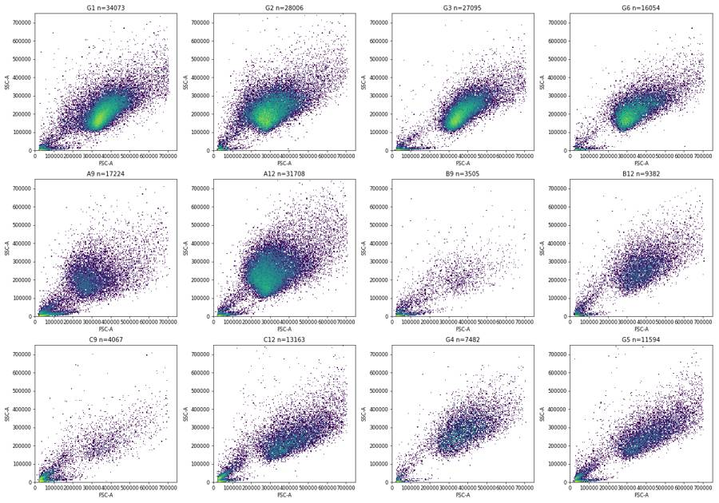
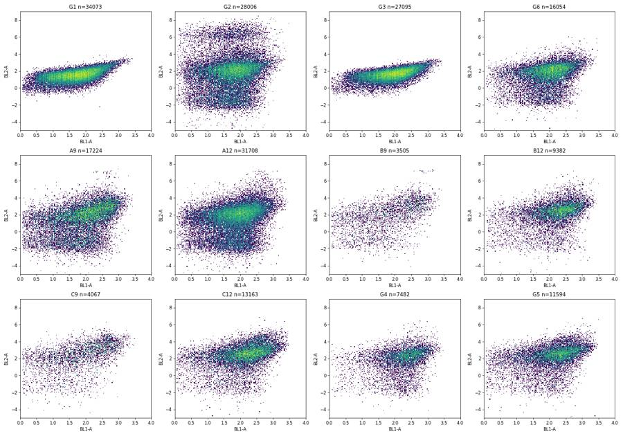
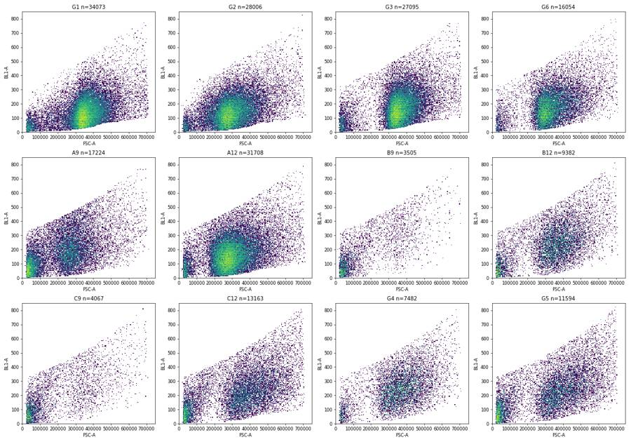
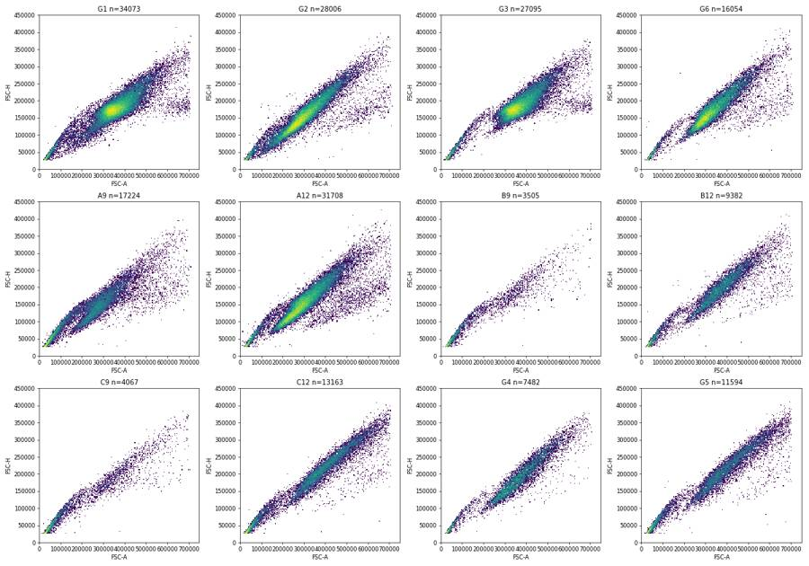
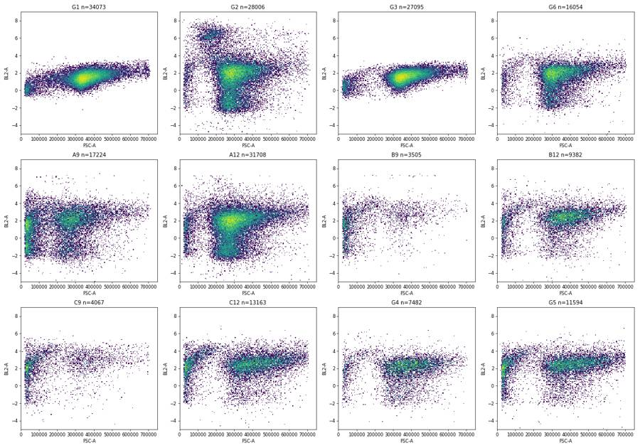
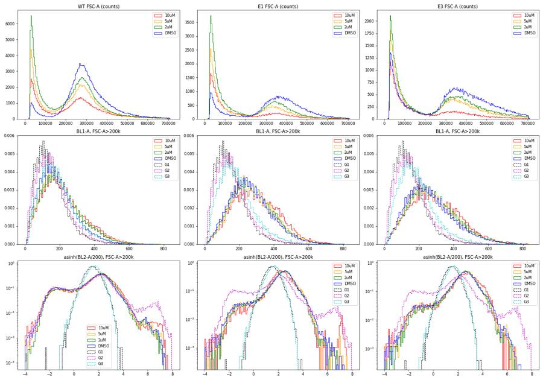
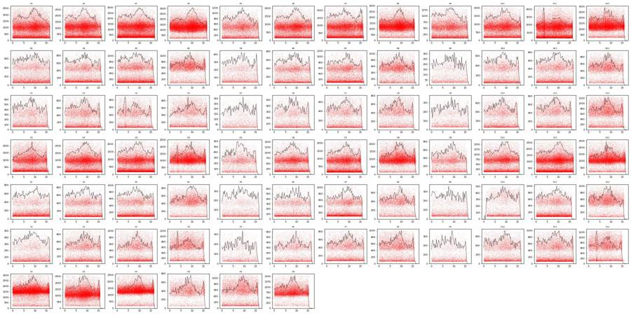
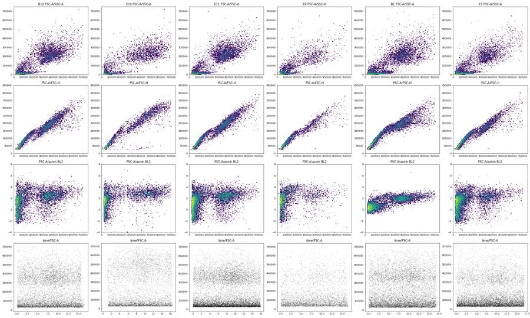
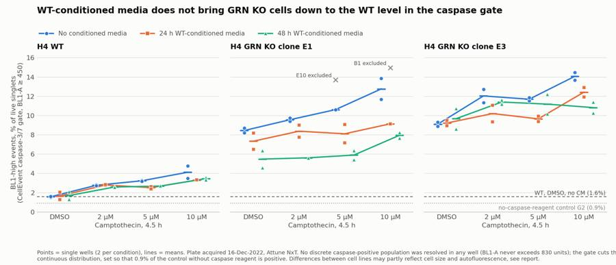
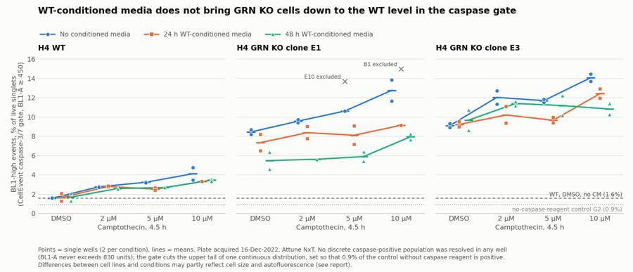

B1_flowkit · Fable 5.2 · attempt LubWXo9
Batch fb2 · job fb2_B_base_conditioned_media_flowkit_claude-fable-5-2 · trial B_base_conditioned_media_flowkit__LubWXo9. Long tool outputs are cut at 6,000 characters.
Score
0.36
0.36
Minutes
11.3
11.3
Agent cost
$4.33
$4.33
Steps
106
106
Screenshots / images
10
10
2
tool call · Bash
cd /task; cat inputs/plan.md; echo ----; cat inputs/plate_layout.csv; ls inputs/raw | head -100; ls -la outputs
3
tool output
# Plan: Caspase activity assay development with progranulin conditioned media (H4 cells) Source: lab notebook entry (target PGRN; assay development; cell-based; flow; cell type H4). This plan covers the plate acquired on 16-Dec-2022. People's names, and all text written after acquisition, have been removed. ## Purpose To determine if progranulin conditioned media can restore wild-type levels of caspase activity in H4 GRN KO cells. ## Rationale Previous literature evidence suggests that applying exogenous progranulin to cells can restore molecular phenotypes in progranulin deficient lines. Our previous experiment with caspase activity on H4 GRN WT and KO cells showed that GRN KO lines had increased caspase activity. This difference was enhanced after campothesin challenge in both GRN WT and KO cells. In this experiment, we will determine if applying conditioned media from WT cell lines onto KO lines can reduce caspase activity closer to WT levels. ## Materials - H4 WT cells - H4 PGRN KO E1 - H4 PGRN KO E3 - H4 media (DMEM + 10% FBS) - CellEvent Caspase-3/7 Green Flow Cytometry Assay Kit - SYTOX AAdvanced Dead Cell Stain - Camptothecin ## Protocol ### 2022-12-12: conditioned-media donor plate - Passage WT H4 cells into 96 well plate (10K/well). This plate is the one the media is collected from. Donor plate map, as written (12 columns per line): ``` WT WT WT WT WT WT WT WT WT WT WT WT WT WT WT WT WT WT WT WT WT WT WT WT WT WT WT WT WT WT WT WT WT WT WT WT 24hr WT WT WT WT WT WT WT WT WT WT WT WT WT WT WT WT WT WT WT WT WT WT WT WT WT WT WT WT WT WT WT WT WT WT WT WT 48hr ``` Red = 24 hr media collection; Purple = 48hr media collection. Cell colours of this map were not preserved in the export. ### 2022-12-13 2. Collect media from 24hr wells 3. Spin down at 2000xg for 10min @4C and collect into fresh plate ### 2022-12-14 4. Collect media from 48hr wells 5. Spin down at 2000xg for 10min. Collect into fresh plate - Passage all H4 lines into 96 well plate for assay (10K/well) according to the assay plate map below. ### Assay plate map The map is as written. Row letters A–H and column numbers 1–12 have been added for orientation. | | 1 | 2 | 3 | 4 | 5 | 6 | 7 | 8 | 9 | 10 | 11 | 12 | |---|---|---|---|---|---|---|---|---|---|---|---|---| | A | WT 10uM | WT 5uM | WT 2uM | WT DMSO | WT 10uM | WT 5uM | WT 2uM | WT DMSO | WT 10uM | WT 5uM | WT 2uM | WT DMSO | | B | E1 10uM | E1 5uM | E1 2uM | E1 DMSO | E1 10uM | E1 5uM | E1 2uM | E1 DMSO | E1 10uM | E1 5uM | E1 2uM | E1 DMSO | | C | E3 10uM | E3 5uM | E3 2uM | E3 DMSO | E3 10uM | E3 5uM | E3 2uM | E3 DMSO | E3 10uM | E3 5uM | E3 2uM | E3 DMSO | | D | WT 10uM | WT 5uM | WT 2uM | WT DMSO | WT 10uM | WT 5uM | WT 2uM | WT DMSO | WT 10uM | WT 5uM | WT 2uM | WT DMSO | | E | E1 10uM | E1 5uM | E1 2uM | E1 DMSO | E1 10uM | E1 5uM | E1 2uM | E1 DMSO | E1 10uM | E1 5uM | E1 2uM | E1 DMSO | | F | E3 10uM | E3 5uM | E3 2uM | E3 DMSO | E3 10uM | E3 5uM | E3 2uM | E3 DMSO | E3 10uM | E3 5uM | E3 2uM | E3 DMSO | | G | WT no treatment (no stain) | WT L/D only | WT Caspase only | E1 untreated | E3 untreated | WT untreated | | | | | | | | H | 24hr conditioned media | | | | 48hr conditoned media | | | | No condtioned media | | | | Cell colours in the notebook: - Rows A–F, columns 1–4: blue (#94B5DD). - Rows A–F, columns 5–8: green (#D5F0AD). - Rows A–F, columns 9–12: uncoloured. - Row G: uncoloured. - Row H: "24hr conditioned media" is blue; "48hr conditoned media" is green; "No condtioned media" is uncoloured. ### 2022-12-15 6. Rinse wells with DMEM and then add conditioned media ### 2022-12-16 7. Add camptothecin to wells at indicated dose. Incubate for 4.5hr 8. Run flow ### Staining and acquisition (assay protocol as written in this entry) - Aspirate media and wash with PBS - Add 150uL trypsin incubate for 5min - Add 75uL FBS and collect into 96w round bottom plate - spin down 200xg for 5min - Add 200uL of Cell Event Caspase 3/7 Detection reagent (1:1000) in flow staining buffer. Incubate for 30min at 37C - Prepare SYTOX AAdvanced Dead Cell Stain at 100uM concentration by adding 1000uL DMSO to stain. Mix well - During the final 5 minutes of 30min Caspase incubation add 2uL of the 100uM Dead Cell stain (final concentration of 1uM) - Analyze the samples without fixing. Flow cytometer settings: FSC-20; SSC-290; BL1 (caspase)-225, BL2 (AAddvanced Dead Cell Stain)-350 ## Acquisition - Instrument: Thermo Attune NxT. - Date: 16-Dec-2022. - Files: 78 FCS files, one per well (A1–F12 and G1–G6). ---- file,well,sample,cell_line,camptothecin,conditioned_media Caspase-assay-2-mlk(1)_caspase_Group_A1.fcs,A1,WT 10uM,WT,10uM,24hr conditioned media Caspase-assay-2-mlk(1)_caspase_Group_A2.fcs,A2,WT 5uM,WT,5uM,24hr conditioned media Caspase-assay-2-mlk(1)_caspase_Group_A3.fcs,A3,WT 2uM,WT,2uM,24hr conditioned media Caspase-assay-2-mlk(1)_caspase_Group_A4.fcs,A4,WT DMSO,WT,DMSO,24hr conditioned media Caspase-assay-2-mlk(1)_caspase_Group_A5.fcs,A5,WT 10uM,WT,10uM,48hr conditioned media Caspase-assay-2-mlk(1)_caspase_Group_A6.fcs,A6,WT 5uM,WT,5uM,48hr conditioned media Caspase-assay-2-mlk(1)_caspase_Group_A7.fcs,A7,WT 2uM,WT,2uM,48hr conditioned media Caspase-assay-2-mlk(1)_caspase_Group_A8.fcs,A8,WT DMSO,WT,DMSO,48hr conditioned media Caspase-assay-2-mlk(1)_caspase_Group_A9.fcs,A9,WT 10uM,WT,10uM,No conditioned media Caspase-assay-2-mlk(1)_caspase_Group_A10.fcs,A10,WT 5uM,WT,5uM,No conditioned media Caspase-assay-2-mlk(1)_caspase_Group_A11.fcs,A11,WT 2uM,WT,2uM,No conditioned media Caspase-assay-2-mlk(1)_caspase_Group_A12.fcs,A12,WT DMSO,WT,DMSO,No conditioned media Caspase-assay-2-mlk(1)_caspase_Group_B1.fcs,B1,E1 10uM,E1,10uM,24hr conditioned media Caspase-assay-2-mlk(1)_caspase_Group_B2.fcs,B2,E1 5uM,E1,5uM,24hr conditioned media Caspase-assay-2-mlk(1)_caspase_Group_B3.fcs,B3,E1 2uM,E1,2uM,24hr conditioned media Caspase-assay-2-mlk(1)_caspase_Group_B4.fcs,B4,E1 DMSO,E1,DMSO,24hr conditioned media Cas … [8,816 more characters not shown]
5
tool call · Bash
cd /task; mkdir -p work; cat > work/explore.py <<'EOF'
import flowkit as fk, flowio, numpy as np, pandas as pd, glob, os, re
lay=pd.read_csv('inputs/plate_layout.csv')
rows=[]
for i,r in lay.iterrows():
p='inputs/raw/'+r.file
fd=flowio.FlowData(p)
t=fd.text
if i==0:
for k,v in sorted(t.items()):
if len(str(v))<300: print(k,'=',v)
else: print(k,'= <long>',str(v)[:200])
s=fk.Sample(p)
e=s.get_events('raw')
df=pd.DataFrame(e,columns=s.pnn_labels)
d=dict(well=r.well,n=len(df))
for c in ['FSC-A','SSC-A','BL1-A','BL2-A']:
q=np.percentile(df[c],[1,50,99])
d[c+'_1']=q[0];d[c+'_50']=q[1];d[c+'_99']=q[2]; d[c+'_max']=df[c].max()
d['tmin']=df['Time'].min();d['tmax']=df['Time'].max()
for k in ['$BTIM','$ETIM','$VOL','$TOT']:
d[k]=t.get(k.lower().strip('$'),t.get(k))
rows.append(d)
out=pd.DataFrame(rows)
pd.set_option('display.width',250);pd.set_option('display.max_rows',200);pd.set_option('display.max_columns',40)
print(out.round(0).to_string())
out.to_csv('work/explore.csv',index=False)
EOF
python3 work/explore.py 2>&1 | grep -v Warning6
tool output
#coincidentcount = 1385 #flowrate = 500 #laser1asf = 1.07 #laser1color = Blue #laser1delay = 1100 #laser2asf = 1.09 #laser2color = Red #laser2delay = 1516 #laser3asf = 1.04 #laser3color = Violet #laser3delay = 702 #laser4asf = 1.00 #laser4color = Yellow #laser4delay = 273 #laserconfig = BRV6Y #p12label = GFP #p12target = AAV-GFP #p13target = AAdvanced livedead #p1label = NA #p1target = NA #p4label = GFP #p4target = AAV-GFP #p5target = AAdvanced livedead #p8label = GFP #p8target = AAV-GFP #p9target = AAdvanced livedead #ptdate = 16-Dec-2022 #ptresult = Pass #tr1 = OR_FSC,25000 #widththreshold = 1000 #winext = 0 beginanalysis = 000000000000 begindata = 000000008192 beginstext = 000000000000 btim = 14:27:29 byteord = 1,2,3,4 cells = NA com = NA cyt = 0A29009 Attune NxT Acoustic Focusing Cytometer (Lasers: BRV6Y) cytsn = 2AFC228071019 datatype = F date = 16-Dec-2022 endanalysis = 000000000000 enddata = 000001616031 endstext = 000000000000 etim = 14:27:46 exp = NA fil = A1.fcs hostid = SEA11065ATTUNE inst = NA lost = 0 mode = L nextdata = 000000000000 op = Jeff Huang originality = Original p10b = 32 p10e = 0,0 p10f = NA p10l = 488 p10n = FSC-W p10r = 1024 p10s = FSC-W p10v = 20 p11b = 32 p11e = 0,0 p11f = NA p11l = 488 p11n = SSC-W p11r = 1024 p11s = SSC-W p11v = 290 p12b = 32 p12e = 0,0 p12f = NA p12l = 488 p12n = BL1-W p12r = 1024 p12s = AAV-GFP-GFP-W p12v = 225 p13b = 32 p13e = 0,0 p13f = NA p13l = 488 p13n = BL2-W p13r = 1024 p13s = AAdvanced livedead-W p13v = 350 p1b = 32 p1e = 0,0 p1f = NA p1l = NA p1n = Time p1r = 67108864 p1s = Time p1v = NA p2b = 32 p2e = 0,0 p2f = NA p2l = 488 p2n = FSC-A p2r = 1048576 p2s = FSC-A p2v = 20 p3b = 32 p3e = 0,0 p3f = NA p3l = 488 p3n = SSC-A p3r = 1048576 p3s = SSC-A p3v = 290 p4b = 32 p4e = 0,0 p4f = NA p4l = 488 p4n = BL1-A p4r = 1048576 p4s = AAV-GFP-GFP-A p4v = 225 p5b = 32 p5e = 0,0 p5f = NA p5l = 488 p5n = BL2-A p5r = 1048576 p5s = AAdvanced livedead-A p5v = 350 p6b = 32 p6e = 0,0 p6f = NA p6l = 488 p6n = FSC-H p6r = 1048576 p6s = FSC-H p6v = 20 p7b = 32 p7e = 0,0 p7f = NA p7l = 488 p7n = SSC-H p7r = 1048576 p7s = SSC-H p7v = 290 p8b = 32 p8e = 0,0 p8f = NA p8l = 488 p8n = BL1-H p8r = 1048576 p8s = AAV-GFP-GFP-H p8v = 225 p9b = 32 p9e = 0,0 p9f = NA p9l = 488 p9n = BL2-H p9r = 1048576 p9s = AAdvanced livedead-H p9v = 350 par = 13 plateid = NA platename = Caspase-assay-2-mlk(1) proj = caspase smno = Group spillover = <long> 6,BL1-A,BL2-A,BL1-H,BL2-H,BL1-W,BL2-W,1.000000,0.000000,0.000000,0.000000,0.000000,0.000000,0.000000,1.000000,0.000000,0.000000,0.000000,0.000000,0.000000,0.000000,1.000000,0.000000,0.000000,0.000000, src = NA sys = SEA11065ATTUNE Microsoft Windows 10 Enterprise LTSC timestep = 0.001 tot = 30920 vol = 140000 wellid = A1 well n FSC-A_1 FSC-A_50 FSC-A_99 FSC-A_max SSC-A_1 SSC-A_50 SSC-A_99 SSC-A_max BL1-A_1 BL1-A_50 BL1-A_99 BL1-A_max BL2-A_1 BL2-A_50 BL2-A_99 BL2-A_max tmin tmax $BTIM $ETIM $VOL $TOT 0 A1 30920 26183.0 244758.0 637162.0 707042.0 1606.0 177361.0 494376.0 1048105.0 11.0 152.0 539.0 805.0 -1169.0 418.0 14436.0 185690.0 0.0 17.0 14:27:29 14:27:46 140000 30920 1 A2 31266 25898.0 233650.0 587050.0 706370.0 1345.0 180769.0 477737.0 923717.0 10.0 147.0 513.0 795.0 -1127.0 365.0 15966.0 139493.0 0.0 17.0 14:28:13 14:28:30 138000 31266 2 A3 38748 25290.0 211445.0 581900.0 705341.0 1391.0 152262.0 479532.0 1033712.0 9.0 142.0 509.0 804.0 -1045.0 327.0 9449.0 134907.0 0.0 17.0 14:28:57 14:29:14 140000 38748 3 A4 34861 32332.0 283227.0 608852.0 710472.0 4142.0 236689.0 534393.0 1048575.0 18.0 159.0 474.0 797.0 -1226.0 403.0 12930.0 164281.0 0.0 17.0 14:29:41 14:29:58 140000 34861 4 A5 14011 26109.0 243639.0 592938.0 698538.0 1767.0 164373.0 450140.0 1048575.0 10.0 160.0 529.0 750.0 -1218.0 522.0 72871.0 166916.0 0.0 17.0 14:30:24 14:30:41 140000 14011 5 A6 25118 25651.0 240093.0 590397.0 704259.0 1640.0 178380.0 480459.0 1048575.0 11.0 151.0 521.0 794.0 -986.0 439.0 12495.0 130930.0 0.0 17.0 14:31:08 14:31:25 140000 25118 6 A7 27544 25455.0 228768.0 585852.0 703561.0 1627.0 173797.0 491112.0 798480.0 10.0 149.0 506.0 803.0 -955.0 409.0 10087.0 160488.0 0.0 16.0 14:31:52 14:32:09 138000 27544 7 A8 30067 31469.0 285647.0 618307.0 709534.0 4085.0 233735.0 540556.0 1048575.0 18.0 159.0 482.0 810.0 -1164.0 468.0 10434.0 154894.0 0.0 16.0 14:32:36 14:32:53 133000 30067 8 A9 17224 26286.0 238900.0 620727.0 708799.0 1943.0 155498.0 461955.0 1048575.0 10.0 169.0 537.0 769.0 -1224.0 524.0 10493.0 166596.0 0.0 17.0 14:33:19 14:33:37 138000 17224 9 A10 24604 26141.0 248478.0 621314.0 709434.0 1695.0 184166.0 495840.0 957740.0 11.0 164.0 527.0 785.0 -983.0 518.0 10698.0 122435.0 0.0 17.0 14:34:03 14:34:20 140000 24604 10 A11 38346 25773.0 241298.0 615968.0 708280.0 1405.0 179418.0 490022.0 1048575.0 11.0 156.0 517.0 810.0 -968.0 439.0 8827.0 126939.0 0.0 16.0 14:34:47 14:35:04 136000 38346 11 A12 31708 31021.0 289891.0 634910.0 710978.0 3459.0 229642.0 547563.0 1048575.0 18.0 161.0 493.0 787.0 -1158.0 565.0 13295.0 147803.0 0.0 17.0 14:35:31 14:35:48 140000 31708 12 B1 9849 25869.0 135209.0 631057.0 705050.0 1543.0 28498.0 440048.0 1048575.0 8.0 142.0 596.0 803.0 -117.0 242.0 1897.0 73746.0 0.0 17.0 14:36:14 14:36:31 141000 9849 13 B2 10963 25146.0 122741.0 601308.0 703393.0 1517.0 32873.0 431081.0 1048575.0 8.0 151.0 561.0 804.0 -746.0 502.0 9009.0 … [14,266 more characters not shown]
8
tool call · Bash
cd /task; cat > work/load.py <<'EOF'
import flowkit as fk, numpy as np, pandas as pd, pickle, warnings
warnings.filterwarnings('ignore')
lay=pd.read_csv('inputs/plate_layout.csv')
D={}
for i,r in lay.iterrows():
s=fk.Sample('inputs/raw/'+r.file)
D[r.well]=pd.DataFrame(s.get_events('raw'),columns=s.pnn_labels)
pickle.dump(D,open('work/D.pkl','wb'))
EOF
python3 work/load.py 2>&1 | tail -3
cat > work/q1.py <<'EOF'
import pickle,numpy as np,pandas as pd
D=pickle.load(open('work/D.pkl','rb'))
pd.set_option('display.width',250)
for w in ['G1','G2','G3','G6','A1','A4','A12','B9','B12','C9','C12']:
d=D[w]
print(w,len(d))
for c in ['BL1-A','BL1-H','BL1-W','BL2-A','BL2-H','BL2-W','FSC-A','FSC-H','FSC-W','SSC-A','SSC-H','SSC-W']:
print(' ',c,np.round(np.percentile(d[c],[0,0.1,1,5,25,50,75,95,99,99.9,100]),0))
EOF
python3 work/q1.py9
tool output
G1 34073 BL1-A [ 4. 6. 18. 36. 82. 131. 194. 313. 437. 605. 773.] BL1-H [ 21. 34. 48. 61. 86. 109. 138. 199. 276. 386. 570.] BL1-W [0. 0. 0. 0. 0. 0. 0. 0. 0. 0. 0.] BL2-A [-940. -148. -51. 62. 255. 406. 610. 1122. 1782. 2657. 4715.] BL2-H [2.000e+00 2.700e+01 6.000e+01 1.050e+02 1.910e+02 2.740e+02 3.930e+02 7.040e+02 1.117e+03 1.647e+03 2.473e+03] BL2-W [ 0. 0. 0. 0. 0. 0. 0. 0. 13. 32. 60.] FSC-A [ 20992. 25133. 33207. 111373. 318328. 353726. 402765. 516821. 649460. 701043. 710099.] FSC-H [ 25034. 25603. 31342. 73344. 158613. 174051. 191900. 247470. 294752. 340323. 414202.] FSC-W [ 40. 49. 66. 102. 139. 150. 157. 168. 199. 282. 322.] SSC-A [ -63578. 1065. 3382. 48573. 159437. 201166. 251119. 344109. 453167. 621557. 1048575.] SSC-H [ 0. 1824. 3427. 36602. 97832. 118432. 142195. 184658. 235309. 312789. 947353.] SSC-W [ 0. 21. 33. 94. 125. 130. 136. 153. 183. 268. 322.] G2 28006 BL1-A [ 4. 6. 16. 33. 85. 140. 205. 329. 449. 611. 826.] BL1-H [ 20. 35. 49. 64. 90. 114. 144. 203. 276. 383. 724.] BL1-W [0. 0. 0. 0. 0. 0. 0. 0. 0. 0. 0.] BL2-A [-3.43570e+04 -8.05400e+03 -1.16900e+03 -5.90000e+02 9.70000e+01 6.40000e+02 1.55700e+03 4.62910e+04 1.16359e+05 2.50454e+05 4.69842e+05] BL2-H [ 0. 0. 208. 359. 571. 745. 1025. 27112. 61313. 105900. 197842.] BL2-W [ 0. 0. 0. 0. 0. 0. 5. 116. 145. 221. 300.] FSC-A [ 17677. 24858. 35598. 116938. 244806. 291545. 354810. 494066. 623889. 694785. 712910.] FSC-H [ 25181. 25657. 32000. 65984. 120436. 148003. 181306. 247553. 300566. 354403. 396198.] FSC-W [ 42. 50. 66. 98. 118. 127. 142. 159. 213. 282. 375.] SSC-A [ -65536. 1353. 4465. 97904. 167945. 211294. 265539. 374188. 493307. 679623. 1048575.] SSC-H [ 0. 2106. 4349. 63320. 101452. 122162. 146369. 189882. 235074. 325503. 1048575.] SSC-W [ 0. 24. 37. 109. 124. 128. 134. 152. 219. 280. 353.] G3 27095 BL1-A [ 4. 7. 23. 46. 107. 167. 240. 379. 500. 646. 769.] BL1-H [ 21. 37. 51. 69. 99. 127. 161. 234. 312. 425. 577.] BL1-W [0. 0. 0. 0. 0. 0. 0. 0. 0. 0. 0.] BL2-A [-371. -172. -57. 74. 292. 465. 681. 1177. 1735. 2508. 3208.] BL2-H [ 0. 30. 75. 126. 221. 310. 432. 731. 1082. 1560. 2208.] BL2-W [ 0. 0. 0. 0. 0. 0. 0. 0. 11. 28. 48.] FSC-A [ 15526. 24921. 31857. 87975. 325980. 360762. 413030. 528939. 650545. 701545. 710871.] FSC-H [ 25211. 25564. 30488. 75078. 164300. 178683. 201264. 256760. 300290. 345559. 379555.] FSC-W [ 37. 49. 64. 98. 141. 151. 157. 167. 190. 280. 313.] SSC-A [-2.373000e+03 9.720000e+02 2.728000e+03 1.803300e+04 1.591560e+05 1.996270e+05 2.481280e+05 3.336360e+05 4.240550e+05 5.438260e+05 1.048575e+06] SSC-H [2.030000e+02 1.745000e+03 2.845000e+03 1.529600e+04 9.792200e+04 1.176540e+05 1.401610e+05 1.805580e+05 2.257350e+05 2.968300e+05 1.048575e+06] SSC-W [ 0. 20. 29. 60. 125. 130. 135. 150. 171. 262. 300.] G6 16054 BL1-A [ 4. 7. 22. 47. 115. 178. 254. 389. 516. 672. 796.] BL1-H [ 19. 38. 54. 72. 104. 132. 166. 238. 307. 414. 602.] BL1-W [0. 0. 0. 0. 0. 0. 0. 0. 0. 0. 0.] BL2-A [-31439. -3022. -685. -335. 190. 588. 1085. 2362. 5032. 13614. 40168.] BL2-H [0.0000e+00 2.2000e+01 1.8100e+02 2.9000e+02 4.5600e+02 5.8300e+02 7.3700e+02 1.1710e+03 2.6460e+03 7.4910e+03 3.3013e+04] BL2-W [ 0. 0. 0. 0. 0. 0. 0. 14. 55. 142. 194.] FSC-A [ 15946. 24956. 33696. 121606. 283686. 326756. 397050. 537794. 648060. 700554. 709508.] FSC-H [ 25039. 25769. 30992. 86464. 139548. 165114. 201820. 269699. 320156. 368240. 410621.] FSC-W [ 38. 50. 67. 103. 127. 142. 152. 164. 193. 286. 375.] SSC-A [ -2449. 1426. 3843. 77473. 168462. 210736. 262711. 354869. 448647. 584219. 1048575.] SSC-H [ 0. 1926. 3638. 55300. 101365. 121311. 144064. 184769. 226888. 284182. 993008.] SSC-W [ 0. 22. 34. 100. 125. 129. 135. 151. 182. 266. 375.] A1 30920 BL1-A [ 4. 4. 11. 27. 86. 152. 240. 406. 539. 695. 805.] BL1-H [ 23. 31. 45. 59. 91. 122. 164. 267. 347. 417. 643.] BL1-W [0. 0. 0. 0. 0. 0. 0. 0. 0. 0. 0.] BL2-A [-1.9281e+04 -2.3910e+03 -1.1690e+03 -6.4800e+02 -4.4000e+01 4.1800e+02 1.1010e+03 3.9120e+03 1.4436e+04 9.8378e+04 1.8569e+05] BL2-H [0.0000e+00 0.0000e+00 9.1000e+01 2.1200e+02 4.3800e+02 6.5400e+02 9.1200e+02 1.9750e+03 1.0045e+04 6.1527e+04 9.8070e+04] BL2-W [ 0. 0. 0. 0. 0. 0. 0. 45. 107. 153. 282.] FSC-A [ 13280. 22753. 26183. 32772. 99176. 244758. 319611. 504352. 637162. 696720. 707042.] FSC-H [ 25128. 25293. 26291. 31624. 77006. 125486. 161319. 224512. 293045. 360114. 441175.] FSC-W [ 41. 45. 52. 65. 101. 121. 137. 166. 209. 271. 375.] SSC-A [-2.282800e+04 -2.740000e+02 1.606000e+03 2.970000e+03 1.716400e+04 1.773610e+05 2.490740e+05 3.735200e+05 4.943760e+05 6.346410e+05 1.048105e+06] SSC-H [1.00000e+02 1.43100e+03 2.10600e+03 3.07700e+03 1.43580e+04 1.06568e+05 1.39352e+05 1.87492e+05 2.30694e+05 2.91972e+05 5.45412e+05] SSC-W [ 0. 15. 24. 31. 59. 125. 134. 160. 205. 273. 356.] A4 34861 BL1-A [ 4. 8. 18. 39. 99. 159. 230. 364. 474. 641. 797.] BL1-H [ 24. 39. 53. 70. 98. 124. 157. 230. 307. 402. 548.] BL1-W [0. 0. 0. 0. 0. 0. 0. 0. 0. 0. 0.] BL2-A [-1.22780e+04 -2.17100e+03 -1.22600e+03 -7.35000e+02 -7.40000e+01 4.03000e+02 9.68000e+02 2.90700e+03 1.29300e+04 9.67190e+04 1.64281e+05] BL2-H [0.00000e+00 6.40000e+01 2.09000e+02 3.51000e+02 5.60000e+02 7.24000e+02 9.22000e+02 1.49800e+03 7.61100e+03 6.07180e+04 1.20208e+05] BL2-W [ 0. 0. 0. 0. 0. 0. 0. 35. 104. 149. 290.] FSC-A [ 22249. 25175. 32332. 97666. 232758. 283227. 344348. 481317. 608852. 692125. 710472.] FSC-H [ 25163. 25729. 30243. 67721. 111543. 142450. 1 … [5,588 more characters not shown]
11
tool call · Bash
cd /task; cat > work/p1.py <<'EOF'
import pickle,numpy as np,pandas as pd, matplotlib; matplotlib.use('Agg'); import matplotlib.pyplot as plt
D=pickle.load(open('work/D.pkl','rb'))
wells=['G1','G2','G3','G6','A9','A12','B9','B12','C9','C12','G4','G5']
def grid(xc,yc,fn,xlog=False,ylog=False,xl=None,yl=None):
fig,ax=plt.subplots(3,4,figsize=(20,14))
for a,w in zip(ax.flat,wells):
d=D[w]; x=d[xc].values; y=d[yc].values
if xlog: x=np.arcsinh(x/50)
if ylog: y=np.arcsinh(y/200)
a.hist2d(x,y,bins=200,norm=matplotlib.colors.LogNorm(),range=[xl,yl] if xl else None,cmap='viridis')
a.set_title(f'{w} n={len(d)}'); a.set_xlabel(xc); a.set_ylabel(yc)
plt.tight_layout(); plt.savefig(fn,dpi=60); plt.close()
grid('FSC-A','SSC-A','work/fsc_ssc.png',xl=[0,750000],yl=[0,750000])
grid('FSC-A','FSC-H','work/fsc_ah.png',xl=[0,750000],yl=[0,450000])
grid('BL1-A','BL2-A','work/bl1_bl2.png',xlog=True,ylog=True,xl=[0,4],yl=[-5,9])
grid('FSC-A','BL1-A','work/fsc_bl1.png',xl=[0,750000],yl=[0,850])
grid('FSC-A','BL2-A','work/fsc_bl2.png',ylog=True,xl=[0,750000],yl=[-5,9])
EOF
python3 work/p1.py12
tool output
(Bash completed with no output)
13
agent
Exploring the raw data first — plotting scatter and fluorescence for control wells to decide gates and check whether the caspase channel carries real signal.
14
tool call · Read
{
"file_path": "/task/work/fsc_ssc.png"
}15
tool output

16
tool call · Read
{
"file_path": "/task/work/bl1_bl2.png"
}17
tool output

18
tool call · Read
{
"file_path": "/task/work/fsc_bl1.png"
}19
tool output

21
tool call · Read
{
"file_path": "/task/work/fsc_ah.png"
}22
tool output

23
tool call · Read
{
"file_path": "/task/work/fsc_bl2.png"
}24
tool output

26
tool call · Bash
cd /task; cat > work/p2.py <<'EOF'
import pickle,numpy as np,pandas as pd, matplotlib; matplotlib.use('Agg'); import matplotlib.pyplot as plt
D=pickle.load(open('work/D.pkl','rb'))
lay=pd.read_csv('inputs/plate_layout.csv').set_index('well')
fig,ax=plt.subplots(3,3,figsize=(20,14))
groups={'WT':['A','D'],'E1':['B','E'],'E3':['C','F']}
cols={'10uM':[1,5,9],'5uM':[2,6,10],'2uM':[3,7,11],'DMSO':[4,8,12]}
cc={'10uM':'r','5uM':'orange','2uM':'g','DMSO':'b'}
for i,(g,rows) in enumerate(groups.items()):
for dose,cs in cols.items():
x=np.concatenate([D[f'{r}{c}']['FSC-A'].values for r in rows for c in cs])
ax[0,i].hist(x,bins=200,range=(0,720000),histtype='step',color=cc[dose],label=dose,density=False)
m=x>200000
y=np.concatenate([D[f'{r}{c}']['BL1-A'].values for r in rows for c in cs])
ax[1,i].hist(y[m],bins=100,range=(0,850),histtype='step',color=cc[dose],label=dose,density=True)
z=np.concatenate([D[f'{r}{c}']['BL2-A'].values for r in rows for c in cs])
ax[2,i].hist(np.arcsinh(z[m]/200),bins=150,range=(-4,8),histtype='step',color=cc[dose],label=dose,density=True)
for k,c in [('G1','k'),('G2','m'),('G3','c')]:
m=D[k]['FSC-A']>200000
ax[1,i].hist(D[k]['BL1-A'][m],bins=100,range=(0,850),histtype='step',color=c,ls='--',label=k,density=True)
ax[2,i].hist(np.arcsinh(D[k]['BL2-A'][m]/200),bins=150,range=(-4,8),histtype='step',color=c,ls='--',label=k,density=True)
ax[0,i].set_title(g+' FSC-A (counts)'); ax[1,i].set_title('BL1-A, FSC-A>200k'); ax[2,i].set_title('asinh(BL2-A/200), FSC-A>200k'); ax[2,i].set_yscale('log')
for a in ax[:,i]: a.legend()
plt.tight_layout(); plt.savefig('work/hists.png',dpi=60)
EOF
python3 work/p2.py27
tool call · Read
{
"file_path": "/task/work/hists.png"
}28
tool output
(Bash completed with no output)
29
tool output

31
agent
Data explored: the caspase channel shows no discrete positive population. Now building the gating strategy and computing counts.
32
tool call · Bash
cd /task; cat > work/q2.py <<'EOF'
import pickle,numpy as np,pandas as pd
D=pickle.load(open('work/D.pkl','rb'))
for w in ['G1','G2','G3','G6','A9','A12','B9','B12','C9','C12','G4','G5','E1','F4']:
d=D[w]; c=d[(d['FSC-A']>150000)&(d['SSC-A']>50000)]
r=c['FSC-H']/c['FSC-A']
h,_=np.histogram(r,bins=np.arange(0.2,0.85,0.05))
print(w,len(c),np.round(np.percentile(r,[1,5,10,25,50,75,95,99]),3),h, 'ssc_sat',(d['SSC-A']>=1048000).sum(),'fsc>695k',(d['FSC-A']>695000).sum(), 'fscW>=374',(d['FSC-W']>=374).sum())
EOF
python3 work/q2.py33
tool output
G1 31833 [0.312 0.4 0.423 0.456 0.49 0.525 0.584 0.659] [ 37 229 242 1086 5317 11522 9259 3137 639 192 91 55] ssc_sat 3 fsc>695k 72 fscW>=374 0 G2 25933 [0.291 0.421 0.447 0.477 0.507 0.539 0.592 0.652] [ 55 241 260 327 1945 8497 9765 3837 735 164 68 25] ssc_sat 3 fsc>695k 26 fscW>=374 4 G3 25207 [0.318 0.413 0.434 0.466 0.5 0.532 0.583 0.622] [ 15 180 151 482 3326 8517 8553 3345 515 54 30 24] ssc_sat 2 fsc>695k 59 fscW>=374 0 G6 15122 [0.292 0.417 0.442 0.472 0.505 0.539 0.59 0.626] [ 29 150 149 227 1406 4959 5398 2322 415 33 23 8] ssc_sat 2 fsc>695k 27 fscW>=374 4 A9 10923 [0.284 0.384 0.423 0.465 0.511 0.564 0.654 0.727] [ 23 133 190 346 1265 2850 2719 1887 918 368 149 54] ssc_sat 2 fsc>695k 12 fscW>=374 3 A12 29319 [0.27 0.387 0.434 0.468 0.502 0.54 0.597 0.649] [ 110 534 509 459 2903 9752 9200 4537 1015 169 67 39] ssc_sat 2 fsc>695k 44 fscW>=374 11 B9 1359 [0.316 0.407 0.441 0.495 0.542 0.594 0.726 0.783] [ 0 7 21 35 92 218 369 301 124 94 58 30] ssc_sat 1 fsc>695k 6 fscW>=374 1 B12 7761 [0.295 0.424 0.453 0.487 0.522 0.554 0.603 0.688] [ 15 75 68 106 463 1853 2993 1751 311 60 38 22] ssc_sat 1 fsc>695k 21 fscW>=374 1 C9 1725 [0.307 0.401 0.441 0.497 0.54 0.581 0.699 0.776] [ 1 13 26 44 118 246 531 443 132 89 51 23] ssc_sat 0 fsc>695k 9 fscW>=374 1 C12 10235 [0.321 0.448 0.476 0.511 0.541 0.566 0.61 0.691] [ 5 65 80 80 312 1371 4178 3430 517 111 55 22] ssc_sat 3 fsc>695k 40 fscW>=374 3 G4 6717 [0.366 0.421 0.444 0.474 0.507 0.539 0.583 0.632] [ 6 22 26 104 673 2120 2590 1001 115 26 20 11] ssc_sat 1 fsc>695k 6 fscW>=374 0 G5 8694 [0.327 0.435 0.463 0.5 0.532 0.559 0.602 0.676] [ 5 49 61 94 412 1575 3643 2389 338 65 41 16] ssc_sat 3 fsc>695k 33 fscW>=374 3 E1 2617 [0.318 0.419 0.455 0.493 0.533 0.573 0.69 0.769] [ 0 19 32 43 148 516 831 657 185 69 70 40] ssc_sat 1 fsc>695k 9 fscW>=374 1 F4 8059 [0.367 0.453 0.478 0.511 0.541 0.567 0.613 0.712] [ 4 18 44 66 243 1124 3236 2737 392 96 66 24] ssc_sat 3 fsc>695k 42 fscW>=374 3
35
tool call · Bash
cd /task; cat > work/gate.py <<'EOF'
import flowkit as fk, numpy as np, pandas as pd, warnings, sys
warnings.filterwarnings('ignore')
from flowkit import Dimension
from flowkit.gates import PolygonGate, RectangleGate
BL2_T=float(sys.argv[1]) if len(sys.argv)>1 else 15000.
BL1_T=float(sys.argv[2]) if len(sys.argv)>2 else 450.
def build():
gs=fk.GatingStrategy()
U='uncompensated'
d=lambda ch,**k: Dimension(ch,compensation_ref=U,**k)
gs.add_gate(PolygonGate('cells',[d('FSC-A'),d('SSC-A')],
[(150000,50000),(150000,450000),(350000,1000000),(720000,1000000),(720000,150000),(400000,50000)]),gate_path=('root',))
lo,hi=0.39,0.72
gs.add_gate(PolygonGate('singlets',[d('FSC-A'),d('FSC-H')],
[(140000,140000*lo),(730000,730000*lo),(730000,730000*hi),(140000,140000*hi)]),gate_path=('root','cells'))
gs.add_gate(RectangleGate('live',[d('BL2-A',range_min=None,range_max=BL2_T)]),gate_path=('root','cells','singlets'))
gs.add_gate(RectangleGate('caspase_pos',[d('BL1-A',range_min=BL1_T,range_max=None)]),gate_path=('root','cells','singlets','live'))
gs.add_gate(RectangleGate('dead',[d('BL2-A',range_min=BL2_T,range_max=None)]),gate_path=('root','cells','singlets'))
return gs
POPS=[('cells','cells','all_events',('root',)),('singlets','singlets','cells',('root','cells')),
('live','live','singlets',('root','cells','singlets')),
('caspase_pos','marker_positive','live',('root','cells','singlets','live')),
('dead','other','singlets',('root','cells','singlets'))]
def run(gs):
lay=pd.read_csv('inputs/plate_layout.csv')
rows=[]
for _,r in lay.iterrows():
s=fk.Sample('inputs/raw/'+r.file)
res=gs.gate_sample(s)
n=s.event_count
cnt={'all_events':n}
rows.append(dict(file=r.file,well=r.well,population='all_events',role='other',parent='none',count=n,pct_of_parent=''))
for name,role,parent,path in POPS:
c=int(res.get_gate_membership(name,gate_path=path).sum())
cnt[name]=c
pc=100*c/cnt[parent] if cnt[parent]>0 else float('nan')
rows.append(dict(file=r.file,well=r.well,population=name,role=role,parent=parent,count=c,pct_of_parent=pc))
return pd.DataFrame(rows)
if __name__=='__main__':
gs=build()
df=run(gs)
df.to_csv('work/counts_tmp.csv',index=False)
lay=pd.read_csv('inputs/plate_layout.csv').set_index('well')
w=df.pivot(index='well',columns='population',values='count').loc[lay.index]
w['pct_cells']=100*w.cells/w.all_events; w['pct_sing']=100*w.singlets/w.cells; w['pct_live']=100*w.live/w.singlets; w['pct_casp']=100*w.caspase_pos/w.live
w['sample']=lay['sample']; w['cm']=lay.conditioned_media
pd.set_option('display.width',250); pd.set_option('display.max_rows',200)
print(w.round(2).to_string())
EOF
python3 work/gate.py 15000 45036
tool output (error)
Exit code 1
Traceback (most recent call last):
File "/task/work/gate.py", line 4, in <module>
from flowkit.gates import PolygonGate, RectangleGate
ModuleNotFoundError: No module named 'flowkit.gates'38
tool call · Bash
cd /task; python3 -c " import flowkit as fk; print(fk.__version__, fk.__file__); print(dir(fk)) import flowkit.gates as g; print(dir(g))" 2>&1 | tail -5; ls /task/work
39
tool output
Traceback (most recent call last): File "<string>", line 3, in <module> ModuleNotFoundError: No module named 'flowkit.gates' 1.2.3 /usr/local/lib/python3.12/site-packages/flowkit/__init__.py ['Dimension', 'GatingStrategy', 'Matrix', 'QuadrantDivider', 'RatioDimension', 'Sample', 'Session', 'Workspace', '__all__', '__builtins__', '__cached__', '__doc__', '__file__', '__loader__', '__name__', '__package__', '__path__', '__spec__', '__version__', '_conf', '_models', '_resources', '_utils', '_version', 'exceptions', 'export_gatingml', 'extract_wsp_sample_data', 'gates', 'generate_transforms', 'load_samples', 'parse_gating_xml', 'parse_wsp', 'read_multi_dataset_fcs', 'transforms'] D.pkl bl1_bl2.png explore.csv explore.py fsc_ah.png fsc_bl1.png fsc_bl2.png fsc_ssc.png gate.py hists.png load.py p1.py p2.py q1.py q2.py
41
tool call · Bash
cd /task; sed -i 's/^from flowkit.gates import PolygonGate, RectangleGate/PolygonGate, RectangleGate = fk.gates.PolygonGate, fk.gates.RectangleGate/' work/gate.py; python3 work/gate.py 15000 450
42
tool output
population all_events caspase_pos cells dead live singlets pct_cells pct_sing pct_live pct_casp sample cm well A1 30920 621 20708 190 18793 18983 66.97 91.67 99.00 3.30 WT 10uM 24hr conditioned media A2 31266 498 20081 195 18802 18997 64.23 94.60 98.97 2.65 WT 5uM 24hr conditioned media A3 38748 566 21956 155 20548 20703 56.66 94.29 99.25 2.75 WT 2uM 24hr conditioned media A4 34861 394 32441 254 30867 31121 93.06 95.93 99.18 1.28 WT DMSO 24hr conditioned media A5 14011 303 9291 165 8461 8626 66.31 92.84 98.09 3.58 WT 10uM 48hr conditioned media A6 25118 416 16662 136 15617 15753 66.33 94.54 99.14 2.66 WT 5uM 48hr conditioned media A7 27544 421 17052 92 16013 16105 61.91 94.45 99.43 2.63 WT 2uM 48hr conditioned media A8 30067 343 27664 151 26400 26551 92.01 95.98 99.43 1.30 WT DMSO 48hr conditioned media A9 17224 484 10919 40 10152 10192 63.39 93.34 99.61 4.77 WT 10uM No conditioned media A10 24604 521 17020 105 15859 15964 69.18 93.80 99.34 3.29 WT 5uM No conditioned media A11 38346 652 24673 117 23119 23236 64.34 94.18 99.50 2.82 WT 2uM No conditioned media A12 31708 424 29313 183 27556 27739 92.45 94.63 99.34 1.54 WT DMSO No conditioned media B1 9849 548 4040 1 3657 3658 41.02 90.54 99.97 14.98 E1 10uM 24hr conditioned media B2 10963 402 4698 14 4435 4449 42.85 94.70 99.69 9.06 E1 5uM 24hr conditioned media B3 14921 528 6179 5 5862 5867 41.41 94.95 99.91 9.01 E1 2uM 24hr conditioned media B4 12172 632 10112 16 9726 9742 83.08 96.34 99.84 6.50 E1 DMSO 24hr conditioned media B5 5068 158 2165 16 1913 1929 42.72 89.10 99.17 8.26 E1 10uM 48hr conditioned media B6 9638 308 5148 17 4819 4836 53.41 93.94 99.65 6.39 E1 5uM 48hr conditioned media B7 13360 328 6166 18 5827 5845 46.15 94.79 99.69 5.63 E1 2uM 48hr conditioned media B8 11210 381 8667 61 8278 8339 77.31 96.22 99.27 4.60 E1 DMSO 48hr conditioned media B9 3505 168 1357 15 1211 1226 38.72 90.35 98.78 13.87 E1 10uM No conditioned media B10 8268 391 3903 13 3680 3693 47.21 94.62 99.65 10.62 E1 5uM No conditioned media B11 10609 445 4951 12 4729 4741 46.67 95.76 99.75 9.41 E1 2uM No conditioned media B12 9382 610 7759 41 7429 7470 82.70 96.28 99.45 8.21 E1 DMSO No conditioned media C1 7495 421 3550 5 3257 3262 47.36 91.89 99.85 12.93 E3 10uM 24hr conditioned media C2 10263 535 5571 19 5377 5396 54.28 96.86 99.65 9.95 E3 5uM 24hr conditioned media C3 8563 444 4906 29 4746 4775 57.29 97.33 99.39 9.36 E3 2uM 24hr conditioned media C4 9241 533 5862 70 5608 5678 63.43 96.86 98.77 9.50 E3 DMSO 24hr conditioned media C5 3151 126 1224 15 1105 1120 38.84 91.50 98.66 11.40 E3 10uM 48hr conditioned media C6 6099 281 2928 22 2761 2783 48.01 95.05 99.21 10.18 E3 5uM 48hr conditioned media C7 8001 460 4297 22 4109 4131 53.71 96.14 99.47 11.19 E3 2uM 48hr conditioned media C8 8215 469 5683 88 5438 5526 69.18 97.24 98.41 8.62 E3 DMSO 48hr conditioned media C9 4067 228 1723 9 1576 1585 42.37 91.99 99.43 14.47 E3 10uM No conditioned media C10 8011 464 4218 38 4018 4056 52.65 96.16 99.06 11.55 E3 5uM No conditioned media C11 9008 555 5073 21 4888 4909 56.32 96.77 99.57 11.35 E3 2uM No conditioned media C12 13163 882 10220 63 9900 9963 77.64 97.49 99.37 8.91 … [6,719 more characters not shown]
44
tool call · Bash
cd /task; cat > work/q3.py <<'EOF'
import pickle,numpy as np,pandas as pd
D=pickle.load(open('work/D.pkl','rb'))
def ls(w):
d=D[w]; r=d['FSC-H']/d['FSC-A']
return d[(d['FSC-A']>150000)&(d['SSC-A']>50000)&(r>0.39)&(r<0.72)&(d['BL2-A']<15000)]
def pool(ws): return pd.concat([ls(w) for w in ws])
G={'G1 unst':['G1'],'G2 LDonly':['G2'],'G3 casp only':['G3'],'G6 WT untr':['G6'],
'WT DMSO':['A4','A8','A12','D4','D8','D12'],'WT 10uM':['A1','A5','A9','D1','D5','D9'],
'E1 untr G4':['G4'],'E1 DMSO':['B4','B8','B12','E4','E8','E12'],'E1 10uM':['B1','B5','B9','E1','E5','E9'],
'E3 untr G5':['G5'],'E3 DMSO':['C4','C8','C12','F4','F8','F12'],'E3 10uM':['C1','C5','C9','F1','F5','F9']}
bins=[150e3,250e3,300e3,350e3,400e3,450e3,500e3,600e3,720e3]
rows=[]
for k,ws in G.items():
d=pool(ws)
row={'grp':k,'n':len(d),'FSCmed':d['FSC-A'].median(),'BL1med':d['BL1-A'].median(),'BL1Hmed':d['BL1-H'].median(),'BL2med':d['BL2-A'].median(),'ratio_med':(d['BL1-A']/d['FSC-A']*1e6).median()}
for a,b in zip(bins[:-1],bins[1:]):
m=(d['FSC-A']>=a)&(d['FSC-A']<b)
row[f'{int(a/1e3)}-{int(b/1e3)}']=d.loc[m,'BL1-A'].median()
rows.append(row)
pd.set_option('display.width',250)
print(pd.DataFrame(rows).round(0).to_string())
# correlation BL1-A with FSC-A, FSC-W in unstained
d=ls('G1'); print(np.corrcoef(d['BL1-A'],d['FSC-A'])[0,1],np.corrcoef(d['BL1-A'],d['FSC-W'])[0,1],np.corrcoef(d['BL1-A'],d['BL1-H'])[0,1],np.corrcoef(d['BL1-A'],d['BL2-A'])[0,1],np.corrcoef(d['BL1-A'],d['SSC-A'])[0,1])
EOF
python3 work/q3.py45
tool output
grp n FSCmed BL1med BL1Hmed BL2med ratio_med 150-250 250-300 300-350 350-400 400-450 450-500 500-600 600-720 0 G1 unst 30519 357719.0 135.0 111.0 417.0 372.0 108.0 109.0 116.0 136.0 159.0 178.0 207.0 284.0 1 G2 LDonly 23595 300837.0 143.0 116.0 526.0 462.0 116.0 124.0 145.0 169.0 183.0 215.0 254.0 332.0 2 G3 casp only 24497 364418.0 171.0 128.0 481.0 455.0 209.0 150.0 143.0 165.0 196.0 219.0 255.0 330.0 3 G6 WT untr 14609 329815.0 180.0 134.0 581.0 520.0 172.0 145.0 163.0 194.0 219.0 236.0 264.0 350.0 4 WT DMSO 148650 296456.0 167.0 129.0 518.0 545.0 147.0 147.0 169.0 189.0 210.0 232.0 271.0 334.0 5 WT 10uM 60075 291690.0 193.0 141.0 613.0 638.0 173.0 169.0 194.0 220.0 241.0 265.0 298.0 346.0 6 E1 untr G4 6563 382374.0 257.0 172.0 810.0 669.0 229.0 209.0 227.0 250.0 269.0 286.0 332.0 391.0 7 E1 DMSO 47797 382402.0 251.0 171.0 1049.0 648.0 265.0 209.0 218.0 238.0 256.0 282.0 320.0 414.0 8 E1 10uM 11545 352377.0 282.0 193.0 950.0 798.0 293.0 262.0 248.0 271.0 299.0 314.0 361.0 392.0 9 E3 untr G5 8433 409379.0 251.0 170.0 1128.0 609.0 240.0 178.0 190.0 221.0 256.0 281.0 321.0 398.0 10 E3 DMSO 44463 397964.0 247.0 168.0 1224.0 607.0 267.0 182.0 194.0 220.0 244.0 271.0 317.0 389.0 11 E3 10uM 10251 351394.0 276.0 187.0 1460.0 763.0 278.0 230.0 231.0 262.0 290.0 325.0 366.0 466.0 0.36109474345191067 0.24155068297445823 0.6800992082235332 0.6342367982625404 0.5112872593469449
47
agent
Counts look sensible; now running per-well acquisition QC (event rate over time, gaps, drift) before finalising flags.
48
tool call · Bash
cd /task; cat > work/q4.py <<'EOF'
import pickle,numpy as np,pandas as pd
D=pickle.load(open('work/D.pkl','rb'))
rows=[]
for w,d in D.items():
t=d['Time'].values # units?
dur=t.max()-t.min()
nb=17
h,_=np.histogram(t,bins=np.linspace(t.min(),t.max(),nb+1))
gaps=np.diff(np.sort(t))
# scatter drift: fraction cells first vs last third
c=(d['FSC-A']>150000)&(d['SSC-A']>50000)
q=np.quantile(t,[1/3,2/3])
f1=c[t<=q[0]].mean(); f3=c[t>q[1]].mean()
b1=d['BL1-A'][c&(t<=q[0])].median(); b3=d['BL1-A'][c&(t>q[1])].median()
s1=d['BL2-A'][c&(t<=q[0])].median(); s3=d['BL2-A'][c&(t>q[1])].median()
fs1=d['FSC-A'][c&(t<=q[0])].median(); fs3=d['FSC-A'][c&(t>q[1])].median()
rows.append(dict(well=w,n=len(d),tmin=t.min(),tmax=t.max(),rate_cv=h.std()/h.mean(),minbin=h.min()/h.mean(),maxbin=h.max()/h.mean(),first=h[0]/h.mean(),last=h[-1]/h.mean(),maxgap=gaps.max(),sorted=bool((np.diff(t)>=0).all()),cellfrac1=f1,cellfrac3=f3,bl1_1=b1,bl1_3=b3,bl2_1=s1,bl2_3=s3,fsc1=fs1,fsc3=fs3,
dupes=int(d.duplicated().sum())))
r=pd.DataFrame(rows)
pd.set_option('display.width',250); pd.set_option('display.max_rows',200)
print(r.round(3).to_string())
EOF
python3 work/q4.py49
tool output
well n tmin tmax rate_cv minbin maxbin first last maxgap sorted cellfrac1 cellfrac3 bl1_1 bl1_3 bl2_1 bl2_3 fsc1 fsc3 dupes 0 A1 30920 0.014 16.721 0.163 0.672 1.335 0.857 0.672 0.006 True 0.650 0.663 185.0 191.0 481.0 724.0 288354.0 292338.0 0 1 A2 31266 0.014 16.571 0.218 0.457 1.348 0.950 0.457 0.015 True 0.633 0.615 178.0 183.0 408.0 545.0 280991.5 287470.0 0 2 A3 38748 0.014 16.778 0.125 0.815 1.246 0.875 0.833 0.004 True 0.539 0.558 178.0 181.0 404.0 583.0 284628.0 288813.0 0 3 A4 34861 0.015 16.734 0.208 0.715 1.443 0.743 0.772 0.006 True 0.927 0.932 161.0 163.0 284.0 455.0 286535.5 293549.0 0 4 A5 14011 0.016 16.581 0.166 0.645 1.319 0.925 0.645 0.027 True 0.630 0.656 199.0 202.0 532.0 703.5 290065.0 295585.0 0 5 A6 25118 0.014 16.726 0.152 0.784 1.313 0.784 0.852 0.006 True 0.639 0.659 178.0 180.0 449.0 625.0 279338.0 285333.0 0 6 A7 27544 0.015 16.495 0.102 0.783 1.195 0.926 0.823 0.009 True 0.599 0.609 181.5 182.0 427.0 585.0 279912.5 287941.5 0 7 A8 30067 0.016 15.853 0.194 0.724 1.398 0.887 0.909 0.007 True 0.911 0.917 162.0 164.0 308.0 529.0 288549.0 296671.0 0 8 A9 17224 0.016 16.515 0.162 0.619 1.248 1.002 0.619 0.027 True 0.623 0.599 217.0 221.0 584.0 784.0 290925.5 294936.0 0 9 A10 24604 0.014 16.639 0.143 0.770 1.293 0.839 0.894 0.007 True 0.680 0.677 194.0 194.0 529.0 754.0 286355.0 294378.0 0 10 A11 38346 0.013 16.331 0.171 0.773 1.440 0.858 0.833 0.005 False 0.618 0.629 185.0 189.0 506.0 673.0 289443.5 295368.5 0 11 A12 31708 0.014 16.608 0.209 0.411 1.316 0.950 0.411 0.057 True 0.920 0.920 164.0 167.0 462.0 596.0 293416.0 299224.0 0 12 B1 9849 0.014 16.792 0.087 0.825 1.182 0.934 0.982 0.015 True 0.395 0.398 290.0 293.0 772.0 767.0 374696.5 373149.0 0 13 B2 10963 0.015 16.731 0.148 0.544 1.219 1.025 0.544 0.034 True 0.410 0.411 262.0 268.0 886.0 1063.0 345754.0 348212.0 0 14 B3 14921 0.014 16.753 0.149 0.529 1.172 0.954 0.529 0.025 True 0.397 0.380 263.0 261.0 1002.0 1051.0 366751.0 375531.5 0 15 B4 12172 0.015 16.570 0.202 0.556 1.378 0.856 0.556 0.062 True 0.823 0.817 246.0 244.5 872.0 969.0 398659.0 402412.0 0 16 B5 5068 0.015 16.550 0.170 0.483 1.218 0.949 0.483 0.091 True 0.391 0.422 282.5 276.0 1127.5 1285.0 326092.5 318475.0 0 17 B6 9638 0.014 16.830 0.187 0.415 1.251 0.861 0.415 0.077 True 0.517 0.508 255.0 243.0 928.0 1031.0 330129.0 334168.0 0 18 B7 13360 0.014 16.719 0.183 0.415 1.303 0.949 0.415 0.032 True 0.436 0.441 254.0 248.0 880.0 1065.0 335342.5 343235.0 0 19 B8 11210 0.014 16.671 0.260 0.256 1.435 0.828 0.256 0.107 True 0.746 0.765 235.0 238.0 910.0 1125.0 360183.5 365286.0 0 20 B9 3505 0.026 16.823 0.202 0.325 1.237 0.912 0.325 0.090 True 0.353 0.363 316.0 318.5 1843.0 1937.0 338309.0 346142.0 0 21 B10 8268 0.014 16.540 0.207 0.337 1.299 0.995 0.337 0.069 True 0.446 0.443 281.0 277.5 1132.0 1240.5 361758.0 363309.5 0 22 B11 10609 0.015 16.705 0.118 0.830 1.261 0.878 0.985 0.014 True 0.446 0.455 266.0 259.0 990.0 1211.0 360500.0 367151.0 0 23 B12 9382 0.015 16.354 0.272 0.263 1.459 0.853 0.263 0.096 True 0.824 0.813 252.0 261.0 962.0 1157.5 380686.5 383842.0 0 24 C1 7495 0.019 16.445 0.218 0.290 1.316 0.923 0.290 0.065 True 0.453 0.454 285.0 267.0 1495.0 1475.0 347681.0 341790.0 0 25 C2 10263 0.015 16.756 0.263 0.144 1.315 0.914 0.144 0.161 True 0.533 0.523 246.0 250.0 1048.0 1234.0 360798.0 357783.5 0 26 C3 8563 0.014 16.210 0.258 0.232 1.394 0.895 0.232 0.065 False 0.556 0.561 246.0 242.0 1138.0 1345.0 368746.0 375214.0 0 27 C4 9241 0.014 16.738 0.169 0.717 1.337 0.717 0.997 0.027 True 0.581 0.645 250.0 250.0 1220.0 1415.5 390004.0 398194.0 0 28 C5 3151 0.014 15.847 0.118 0.788 1.203 0.788 1.030 0.037 True 0.324 0.415 298.0 286.5 2259.0 2193.0 325010.0 319605.0 0 29 C6 6099 0.017 16.406 0.241 0.240 1.352 0.931 0.240 0.128 True 0.443 0.477 260.0 266.0 1370.0 1490.0 354020.0 359305.0 0 30 C7 8001 0.018 15.962 0.157 0.761 1.334 0.907 0.833 0.033 True 0.516 0.514 270.0 256.0 1273.0 1408.0 378896.0 391051.0 0 31 C8 8215 0.015 16.038 0.231 0.393 1.444 0.813 0.393 0.102 True 0.645 0.691 243.0 249.0 1218.0 1422.5 395987.0 399106.0 0 32 C9 4067 0.015 16.742 0.123 0.811 1.246 0.811 0.978 0.045 True 0.412 0.412 289.0 308.5 1915.0 2361.5 349490.0 356824.5 0 33 C10 8011 0.018 16.063 0.251 0.202 1.343 0.872 0.202 0.060 True 0.496 0.516 269.0 281.0 1439.5 1650.0 373773.0 370681.0 0 34 C11 9008 0.019 15.913 0.166 0.795 1.347 0.923 0.864 0.020 True 0.523 0.543 267.0 270.0 1315.0 1419.5 393348.5 402154.5 0 35 C12 13163 0.021 16.730 0.298 0.039 1.431 0.956 0.039 0.380 True 0.753 … [6,955 more characters not shown]
51
tool call · Bash
cd /task; cat > work/p3.py <<'EOF'
import pickle,numpy as np,pandas as pd, matplotlib; matplotlib.use('Agg'); import matplotlib.pyplot as plt
D=pickle.load(open('work/D.pkl','rb'))
fig,ax=plt.subplots(7,12,figsize=(36,18))
for i,R in enumerate('ABCDEFG'):
for j in range(12):
w=f'{R}{j+1}'; a=ax[i,j]
if w not in D: a.axis('off'); continue
d=D[w]; t=d['Time'].values
h,e=np.histogram(t,bins=np.arange(0,17.5,0.25))
a.plot(e[:-1],h/0.25,'k',lw=0.8)
a2=a.twinx()
a2.plot(t,d['FSC-A'],',',alpha=0.2,color='r'); a2.set_yticks([])
a.set_title(w,fontsize=9); a.set_ylim(0,None)
plt.tight_layout(); plt.savefig('work/rates.png',dpi=50)
EOF
python3 work/p3.py52
tool call · Read
{
"file_path": "/task/work/rates.png"
}53
tool output
(Bash completed with no output)
54
tool output

56
tool call · Bash
cd /task; cat > work/q5.py <<'EOF'
import pickle,numpy as np,pandas as pd
D=pickle.load(open('work/D.pkl','rb'))
def cells(w):
d=D[w]; return d[(d['FSC-A']>150000)&(d['SSC-A']>50000)]
for w in ['B10','E9','E10','E11','E2','E6','B6','E12','B9']:
c=cells(w)
print(w,len(D[w]),len(c),'FSC-A',np.round(np.percentile(c['FSC-A'],[5,25,50,75,95])/1e3),'FSC-H',np.round(np.percentile(c['FSC-H'],[5,50,95])/1e3),'FSC-W',np.round(np.percentile(c['FSC-W'],[5,50,95])),'SSC-A',np.round(np.percentile(c['SSC-A'],[5,50,95])/1e3),'BL1',np.round(np.percentile(c['BL1-A'],[5,50,95])),'BL2',np.round(np.percentile(c['BL2-A'],[5,50,95])), 'H/A',np.round((c['FSC-H']/c['FSC-A']).median(),3))
EOF
python3 work/q5.py57
tool output
B10 8268 3905 FSC-A [198. 307. 364. 428. 557.] FSC-H [119. 189. 276.] FSC-W [117. 141. 168.] SSC-A [131. 223. 382.] BL1 [ 95. 278. 518.] BL2 [ -81. 1243. 5654.] H/A 0.527 E9 4147 1142 FSC-A [162. 246. 339. 411. 570.] FSC-H [111. 178. 281.] FSC-W [111. 141. 169.] SSC-A [ 84. 191. 370.] BL1 [ 99. 288. 514.] BL2 [-114. 1719. 7252.] H/A 0.558 E10 5492 2360 FSC-A [230. 364. 456. 533. 636.] FSC-H [140. 243. 315.] FSC-W [114. 152. 171.] SSC-A [140. 235. 381.] BL1 [116. 287. 545.] BL2 [ 439. 1894. 6263.] H/A 0.536 E11 11711 4424 FSC-A [230. 316. 366. 422. 535.] FSC-H [124. 196. 282.] FSC-W [117. 142. 163.] SSC-A [147. 231. 370.] BL1 [ 98. 273. 502.] BL2 [ -84. 1115. 4605.] H/A 0.538 E2 10681 4676 FSC-A [213. 299. 343. 396. 516.] FSC-H [118. 180. 263.] FSC-W [117. 137. 162.] SSC-A [147. 231. 376.] BL1 [ 97. 264. 480.] BL2 [-198. 976. 4313.] H/A 0.523 E6 7547 3181 FSC-A [198. 284. 330. 380. 516.] FSC-H [112. 169. 258.] FSC-W [115. 132. 161.] SSC-A [146. 248. 392.] BL1 [104. 272. 469.] BL2 [ -96. 1137. 5189.] H/A 0.515 B6 9638 5148 FSC-A [195. 287. 333. 389. 539.] FSC-H [113. 171. 258.] FSC-W [114. 136. 165.] SSC-A [137. 238. 403.] BL1 [ 92. 251. 477.] BL2 [-167. 1030. 5394.] H/A 0.516 E12 10755 9031 FSC-A [257. 330. 390. 463. 580.] FSC-H [131. 208. 299.] FSC-W [118. 143. 165.] SSC-A [159. 259. 411.] BL1 [ 96. 263. 500.] BL2 [-126. 1012. 4282.] H/A 0.533 B9 3505 1359 FSC-A [171. 261. 345. 416. 566.] FSC-H [115. 178. 276.] FSC-W [114. 143. 170.] SSC-A [ 94. 207. 374.] BL1 [111. 316. 533.] BL2 [ -57. 1933. 8608.] H/A 0.542
59
tool call · Bash
cd /task; cat > work/q6.py <<'EOF'
import pickle,numpy as np,pandas as pd
D=pickle.load(open('work/D.pkl','rb'))
def cells(w):
d=D[w]; return d[(d['FSC-A']>150000)&(d['SSC-A']>50000)]
feats={'FSC-A med (k)':lambda c,d:c['FSC-A'].median()/1e3,'FSC-H med(k)':lambda c,d:c['FSC-H'].median()/1e3,'SSC-A med (k)':lambda c,d:c['SSC-A'].median()/1e3,
'BL2 p5':lambda c,d:np.percentile(c['BL2-A'],5),'BL2 med':lambda c,d:c['BL2-A'].median(),'BL2 p95':lambda c,d:np.percentile(c['BL2-A'],95),'BL1 med':lambda c,d:c['BL1-A'].median(),
'BL1-H med':lambda c,d:c['BL1-H'].median(),'BL1/FSC x1e6':lambda c,d:(c['BL1-A']/c['FSC-A']).median()*1e6,
'debris BL2 med':lambda c,d:d.loc[d['FSC-A']<100000,'BL2-A'].median(),'debris BL1 med':lambda c,d:d.loc[d['FSC-A']<100000,'BL1-A'].median(),
'tmin':lambda c,d:d['Time'].min(),'SSC-W med':lambda c,d:c['SSC-W'].median(),'FSC-W med':lambda c,d:c['FSC-W'].median(),'n cells':lambda c,d:len(c)}
pd.set_option('display.width',250)
for k,f in feats.items():
M=pd.DataFrame(index=list('ABCDEFG'),columns=range(1,13),dtype=float)
for w,d in D.items():
M.loc[w[0],int(w[1:])]=f(cells(w),d)
print(k); print(M.round(2 if k=='tmin' else 0).to_string())
EOF
python3 work/q6.py60
tool output
FSC-A med (k)
1 2 3 4 5 6 7 8 9 10 11 12
A 289.0 284.0 286.0 290.0 292.0 283.0 284.0 293.0 294.0 290.0 292.0 297.0
B 374.0 349.0 372.0 401.0 326.0 333.0 340.0 363.0 345.0 364.0 366.0 382.0
C 347.0 361.0 372.0 397.0 325.0 358.0 385.0 400.0 352.0 376.0 399.0 410.0
D 307.0 293.0 294.0 309.0 297.0 293.0 293.0 308.0 298.0 306.0 300.0 303.0
E 347.0 343.0 352.0 384.0 333.0 330.0 339.0 368.0 339.0 456.0 366.0 390.0
F 358.0 378.0 375.0 398.0 351.0 379.0 378.0 389.0 364.0 376.0 378.0 398.0
G 358.0 298.0 366.0 382.0 411.0 332.0 NaN NaN NaN NaN NaN NaN
FSC-H med(k)
1 2 3 4 5 6 7 8 9 10 11 12
A 148.0 146.0 147.0 146.0 152.0 146.0 145.0 151.0 154.0 150.0 150.0 151.0
B 196.0 178.0 188.0 203.0 168.0 171.0 175.0 189.0 178.0 189.0 192.0 199.0
C 178.0 188.0 193.0 213.0 172.0 188.0 201.0 215.0 183.0 198.0 209.0 220.0
D 160.0 152.0 150.0 160.0 153.0 153.0 152.0 159.0 157.0 160.0 156.0 158.0
E 183.0 180.0 183.0 202.0 174.0 169.0 177.0 195.0 178.0 243.0 196.0 208.0
F 191.0 200.0 198.0 216.0 191.0 203.0 204.0 211.0 196.0 201.0 200.0 215.0
G 176.0 152.0 181.0 193.0 217.0 168.0 NaN NaN NaN NaN NaN NaN
SSC-A med (k)
1 2 3 4 5 6 7 8 9 10 11 12
A 222.0 230.0 230.0 244.0 209.0 223.0 231.0 242.0 207.0 224.0 229.0 238.0
B 215.0 232.0 233.0 265.0 210.0 238.0 246.0 266.0 207.0 223.0 228.0 267.0
C 223.0 240.0 258.0 240.0 201.0 239.0 255.0 246.0 214.0 235.0 247.0 240.0
D 218.0 218.0 228.0 227.0 212.0 216.0 221.0 227.0 208.0 216.0 220.0 219.0
E 215.0 231.0 239.0 266.0 214.0 248.0 248.0 256.0 191.0 235.0 231.0 259.0
F 235.0 261.0 265.0 249.0 216.0 259.0 261.0 256.0 221.0 246.0 257.0 245.0
G 206.0 217.0 206.0 285.0 258.0 216.0 NaN NaN NaN NaN NaN NaN
BL2 p5
1 2 3 4 5 6 7 8 9 10 11 12
A -690.0 -681.0 -650.0 -755.0 -594.0 -566.0 -569.0 -673.0 -594.0 -518.0 -551.0 -576.0
B 297.0 -125.0 94.0 -83.0 -125.0 -167.0 -152.0 -241.0 -57.0 -81.0 -97.0 -174.0
C -111.0 -243.0 -139.0 -121.0 45.0 -10.0 57.0 -94.0 13.0 -4.0 53.0 -117.0
D -528.0 -571.0 -490.0 -532.0 -485.0 -464.0 -337.0 -423.0 -464.0 -342.0 -385.0 -445.0
E -117.0 -198.0 -111.0 -118.0 -44.0 -96.0 -76.0 -62.0 -114.0 439.0 -84.0 -126.0
F -123.0 -108.0 -49.0 -131.0 -155.0 61.0 -38.0 -51.0 42.0 52.0 98.0 -96.0
G 116.0 -600.0 132.0 -322.0 -121.0 -327.0 NaN NaN NaN NaN NaN NaN
BL2 med
1 2 3 4 5 6 7 8 9 10 11 12
A 602.0 506.0 513.0 399.0 643.0 574.0 568.0 458.0 717.0 672.0 625.0 580.0
B 766.0 1038.0 1064.0 970.0 1258.0 1030.0 1042.0 1089.0 1933.0 1243.0 1158.0 1097.0
C 1554.0 1179.0 1307.0 1396.0 2295.0 1483.0 1421.0 1412.0 2153.0 1602.0 1410.0 1252.0
D 739.0 549.0 624.0 560.0 703.0 703.0 796.0 748.0 816.0 790.0 676.0 685.0
E 1076.0 976.0 1033.0 1160.0 1298.0 1137.0 1122.0 1363.0 1719.0 1894.0 1115.0 1012.0
F 1284.0 1152.0 1238.0 1173.0 1057.0 1298.0 1216.0 1231.0 1370.0 1341.0 1434.0 1225.0
G 423.0 610.0 487.0 828.0 1152.0 598.0 NaN NaN NaN NaN NaN NaN
BL2 p95
1 2 3 4 5 6 7 8 9 10 11 12
A 4070.0 3455.0 3288.0 2729.0 5691.0 4063.0 3724.0 2800.0 4427.0 4206.0 3845.0 3852.0
B 1635.0 5020.0 4036.0 3666.0 7678.0 5394.0 5161.0 6228.0 8608.0 5654.0 5459.0 4983.0
C 7231.0 6621.0 6458.0 8894.0 10614.0 7870.0 7051.0 8902.0 9737.0 8218.0 5997.0 6784.0
D 4262.0 3269.0 3706.0 3595.0 5048.0 4092.0 4093.0 5310.0 5018.0 3904.0 3176.0 3818.0
E 4783.0 4313.0 4546.0 5471.0 6165.0 5189.0 5033.0 6696.0 7252.0 6263.0 4605.0 4282.0
F 5617.0 4978.0 5609.0 6407.0 6074.0 5493.0 4625.0 6299.0 5619.0 5190.0 5245.0 6052.0
G 1143.0 34602.0 1200.0 3275.0 5322.0 2278.0 NaN NaN NaN NaN NaN NaN
BL1 med
1 2 3 4 5 6 7 8 9 10 11 12
A 188.0 181.0 180.0 163.0 200.0 180.0 182.0 164.0 219.0 194.0 188.0 167.0
B 289.0 267.0 261.0 246.0 278.0 251.0 251.0 238.0 316.0 278.0 264.0 257.0
C 275.0 248.0 246.0 251.0 291.0 264.0 263.0 246.0 301.0 273.0 267.0 242.0
D 203.0 191.0 199.0 183.0 209.0 198.0 202.0 182.0 207.0 210.0 203.0 178.0
E 279.0 264.0 271.0 268.0 281.0 272.0 262.0 254.0 288.0 287.0 273.0 263.0
F 265.0 255.0 266.0 249.0 254.0 271.0 268.0 260.0 290.0 276.0 275.0 250.0
G 137.0 145.0 173.0 258.0 252.0 183.0 NaN NaN NaN NaN NaN NaN
BL1-H med
1 2 3 4 5 6 7 8 9 10 11 12
A 136.0 136.0 135.0 125.0 145.0 134.0 135.0 128.0 154.0 141.0 138.0 127.0
B 202.0 182.0 178.0 168.0 194.0 173.0 170.0 165.0 218.0 183.0 181.0 173.0
C 184.0 169.0 169.0 169.0 202.0 175.0 178.0 167.0 201.0 180.0 178.0 164.0
D 143.0 140.0 144.0 135.0 148.0 143.0 145.0 135.0 148.0 147.0 145.0 133.0
E 184.0 178.0 180.0 177.0 191.0 181.0 177.0 174.0 194.0 192.0 185.0 178.0
F 181.0 172.0 179.0 169.0 177.0 182.0 180.0 177.0 198.0 182.0 182.0 168.0
G 111.0 117.0 129.0 172.0 170.0 134.0 NaN NaN NaN NaN NaN NaN
BL1/FSC x1e6
1 2 3 4 5 6 7 8 9 10 11 12
A 615.0 625.0 615.0 543.0 659.0 622.0 623.0 541.0 711.0 645.0 621.0 533.0
B 777.0 750.0 692.
… [4,757 more characters not shown]62
tool call · Bash
cd /task; cat > work/p4.py <<'EOF'
import pickle,numpy as np,pandas as pd, matplotlib; matplotlib.use('Agg'); import matplotlib.pyplot as plt
D=pickle.load(open('work/D.pkl','rb'))
ws=['B10','E10','E11','E9','B1','E1']
fig,ax=plt.subplots(4,6,figsize=(30,18))
for j,w in enumerate(ws):
d=D[w]
ax[0,j].hist2d(d['FSC-A'],d['SSC-A'],bins=150,range=[[0,750000],[0,750000]],norm=matplotlib.colors.LogNorm()); ax[0,j].set_title(w+' FSC-A/SSC-A')
ax[1,j].hist2d(d['FSC-A'],d['FSC-H'],bins=150,range=[[0,750000],[0,450000]],norm=matplotlib.colors.LogNorm()); ax[1,j].set_title('FSC-A/FSC-H')
ax[2,j].hist2d(d['FSC-A'],np.arcsinh(d['BL2-A']/200),bins=150,range=[[0,750000],[-4,8]],norm=matplotlib.colors.LogNorm()); ax[2,j].set_title('FSC-A/asinh BL2')
ax[3,j].plot(d['Time'],d['FSC-A'],',k',alpha=0.4); ax[3,j].set_title('time/FSC-A')
plt.tight_layout(); plt.savefig('work/e10.png',dpi=50)
EOF
python3 work/p4.py63
tool call · Read
{
"file_path": "/task/work/e10.png"
}64
tool output
(Bash completed with no output)
65
tool output

67
agent
Found two anomalous wells (B1 lacks the dead-cell stain; E10 has a shifted scatter and late start). Checking a few wells with time glitches, then finalising gates.
68
tool call · Bash
cd /task; cat > work/q7.py <<'EOF'
import pickle,numpy as np,pandas as pd
D=pickle.load(open('work/D.pkl','rb'))
for w in ['A11','C3','D4','F4','F12','A12']:
d=D[w]; t=d['Time'].values
dt=np.diff(t); idx=np.where(dt<0)[0]
print(w,len(t),'neg steps',len(idx),[(int(i),round(t[i],3),round(t[i+1],3)) for i in idx[:5]])
h,e=np.histogram(t,bins=np.arange(0,17.2,0.1)); k=h.argmax()
print(' peak bin',e[k],h[k],'median bin',np.median(h))
m=(t>=e[k]-0.2)&(t<e[k]+0.4); c=(d['FSC-A']>150000)&(d['SSC-A']>50000)
print(' in burst: n',m.sum(),'cellfrac',c[m].mean().round(3),'overall',c.mean().round(3),'BL1med',d['BL1-A'][m&c].median(),d['BL1-A'][c].median(),'FSCmed',d['FSC-A'][m&c].median(),d['FSC-A'][c].median())
EOF
python3 work/q7.py69
tool output
A11 38346 neg steps 1 [(998, 3.834, 0.013)] peak bin 3.6 445 median bin 222.0 in burst: n 2136 cellfrac 0.609 overall 0.644 BL1med 189.0 188.0 FSCmed 289023.5 292219.0 C3 8563 neg steps 1 [(229, 3.934, 0.014)] peak bin 3.4000000000000004 111 median bin 53.0 in burst: n 500 cellfrac 0.604 overall 0.574 BL1med 246.5 246.0 FSCmed 374208.0 371979.0 D4 24551 neg steps 1 [(425, 3.897, 0.014)] peak bin 9.9 236 median bin 142.0 in burst: n 1212 cellfrac 0.952 overall 0.933 BL1med 181.0 183.0 FSCmed 309396.0 308584.0 F4 10729 neg steps 1 [(253, 3.98, 0.014)] peak bin 3.5 125 median bin 67.0 in burst: n 617 cellfrac 0.744 overall 0.751 BL1med 247.0 249.0 FSCmed 382652.0 397817.0 F12 11679 neg steps 1 [(343, 3.922, 0.016)] peak bin 3.8000000000000003 144 median bin 70.0 in burst: n 638 cellfrac 0.688 overall 0.734 BL1med 243.0 250.0 FSCmed 383216.0 398092.0 A12 31708 neg steps 0 [] peak bin 9.200000000000001 388 median bin 187.0 in burst: n 1543 cellfrac 0.944 overall 0.925 BL1med 170.0 167.0 FSCmed 302045.0 297305.0
71
tool call · Bash
cd /task; cat > work/q8.py <<'EOF'
import pickle,numpy as np,pandas as pd
D=pickle.load(open('work/D.pkl','rb'))
prev={'A11':'A10','C3':'C2','D4':'D3','F4':'F3','F12':'F11'}
for w,p in prev.items():
d=D[w]; t=d['Time'].values; i=np.where(np.diff(t)<0)[0][0]+1
c=(d['FSC-A']>150000)&(d['SSC-A']>50000)
cp=(D[p]['FSC-A']>150000)&(D[p]['SSC-A']>50000)
print(w,'first block n',i,'t range',t[:i].min().round(2),t[:i].max().round(2),'cellfrac block',c[:i].mean().round(3),'rest',c[i:].mean().round(3),'prev well',p,cp.mean().round(3),
'FSC med block',d['FSC-A'][:i][c[:i]].median(),'rest',d['FSC-A'][i:][c[i:]].median(), 'BL2 med',d['BL2-A'][:i][c[:i]].median(),d['BL2-A'][i:][c[i:]].median())
EOF
python3 work/q8.py72
tool output
A11 first block n 999 t range 3.29 3.83 cellfrac block 0.563 rest 0.646 prev well A10 0.692 FSC med block 301499.5 rest 292076.0 BL2 med 679.0 623.0 C3 first block n 230 t range 3.39 3.93 cellfrac block 0.539 rest 0.574 prev well C2 0.544 FSC med block 368386.0 rest 372097.0 BL2 med 1435.5 1305.0 D4 first block n 426 t range 3.36 3.9 cellfrac block 0.906 rest 0.933 prev well D3 0.57 FSC med block 310027.0 rest 308524.0 BL2 med 623.0 559.0 F4 first block n 254 t range 3.43 3.98 cellfrac block 0.697 rest 0.752 prev well F3 0.538 FSC med block 402301.0 rest 397653.0 BL2 med 1133.0 1173.0 F12 first block n 344 t range 3.37 3.92 cellfrac block 0.674 rest 0.735 prev well F11 0.5 FSC med block 387317.5 rest 398305.0 BL2 med 1201.0 1226.0
74
tool call · Skill
{
"skill": "dataviz"
}75
tool output
Launching skill: dataviz
76
tool call · Bash
cd /task; cat > work/final_gates.py <<'EOF'
import flowkit as fk, numpy as np, pandas as pd, warnings
warnings.filterwarnings('ignore')
import sys; sys.path.insert(0,'work')
from gate import build, POPS
gs=build() # BL2-A live < 15000 ; BL1-A caspase_pos >= 450
with open('outputs/gates.xml','wb') as f: fk.export_gatingml(gs,f)
gs2=fk.parse_gating_xml('/task/outputs/gates.xml')
print(gs2.get_gate_ids())
lay=pd.read_csv('inputs/plate_layout.csv')
rows=[]
for _,r in lay.iterrows():
s=fk.Sample('inputs/raw/'+r.file)
res=gs2.gate_sample(s); res0=gs.gate_sample(s)
cnt={'all_events':s.event_count}
rows.append(dict(file=r.file,well=r.well,population='all_events',role='other',parent='none',count=s.event_count,pct_of_parent=''))
for name,role,parent,path in POPS:
c=int(res.get_gate_membership(name,gate_path=path).sum())
assert c==int(res0.get_gate_membership(name,gate_path=path).sum())
cnt[name]=c
rows.append(dict(file=r.file,well=r.well,population=name,role=role,parent=parent,count=c,pct_of_parent=round(100*c/cnt[parent],4)))
df=pd.DataFrame(rows)[['file','well','population','role','parent','count','pct_of_parent']]
df.to_csv('outputs/counts.csv',index=False)
print(df.head(8)); print(len(df))
EOF
python3 work/final_gates.py; head -c 1500 outputs/gates.xml77
tool output
[('cells', ('root',)), ('singlets', ('root', 'cells')), ('live', ('root', 'cells', 'singlets')), ('caspase_pos', ('root', 'cells', 'singlets', 'live')), ('dead', ('root', 'cells', 'singlets'))]
file well ... count pct_of_parent
0 Caspase-assay-2-mlk(1)_caspase_Group_A1.fcs A1 ... 30920
1 Caspase-assay-2-mlk(1)_caspase_Group_A1.fcs A1 ... 20708 66.9728
2 Caspase-assay-2-mlk(1)_caspase_Group_A1.fcs A1 ... 18983 91.6699
3 Caspase-assay-2-mlk(1)_caspase_Group_A1.fcs A1 ... 18793 98.9991
4 Caspase-assay-2-mlk(1)_caspase_Group_A1.fcs A1 ... 621 3.3044
5 Caspase-assay-2-mlk(1)_caspase_Group_A1.fcs A1 ... 190 1.0009
6 Caspase-assay-2-mlk(1)_caspase_Group_A2.fcs A2 ... 31266
7 Caspase-assay-2-mlk(1)_caspase_Group_A2.fcs A2 ... 20081 64.2263
[8 rows x 7 columns]
468
<?xml version='1.0' encoding='UTF-8'?>
<gating:Gating-ML xmlns:gating="http://www.isac-net.org/std/Gating-ML/v2.0/gating" xmlns:data-type="http://www.isac-net.org/std/Gating-ML/v2.0/datatypes" xmlns:transforms="http://www.isac-net.org/std/Gating-ML/v2.0/transformations">
<gating:PolygonGate gating:id="cells">
<gating:dimension gating:compensation-ref="uncompensated">
<data-type:fcs-dimension data-type:name="FSC-A"/>
</gating:dimension>
<gating:dimension gating:compensation-ref="uncompensated">
<data-type:fcs-dimension data-type:name="SSC-A"/>
</gating:dimension>
<gating:vertex>
<gating:coordinate data-type:value="150000"/>
<gating:coordinate data-type:value="50000"/>
</gating:vertex>
<gating:vertex>
<gating:coordinate data-type:value="150000"/>
<gating:coordinate data-type:value="450000"/>
</gating:vertex>
<gating:vertex>
<gating:coordinate data-type:value="350000"/>
<gating:coordinate data-type:value="1000000"/>
</gating:vertex>
<gating:vertex>
<gating:coordinate data-type:value="720000"/>
<gating:coordinate data-type:value="1000000"/>
</gating:vertex>
<gating:vertex>
<gating:coordinate data-type:value="720000"/>
<gating:coordinate data-type:value="150000"/>
</gating:vertex>
<gating:vertex>
<gating:coordinate data-type:value="400000"/>
<gating:coordinate data-type:value="50000"/>
</gating:vertex>
</gating:PolygonGate>
<gati79
tool call · Bash
cd /tmp/claude-0/bundled-skills/2.1.322/493d7b6b6b9711ffbc1b7f1d1b4f7c69/dataviz; grep -n -i -E "categorical|#[0-9a-fA-F]{6}" references/palette.md | head -5080
tool output
18: --surface-1: #fcfcfb; /* chart surface */ 19: --text-primary: #0b0b0b; 20: --text-secondary: #52514e; 21: --series-1: #2a78d6; /* categorical slot 1 */ 27: --surface-1: #1a1a19; 28: --text-primary: #f0efec; 29: --text-secondary: #c3c2b7; 30: --series-1: #3987e5; 35: --surface-1: #1a1a19; 36: --text-primary: #f0efec; 37: --text-secondary: #c3c2b7; 38: --series-1: #3987e5; 47:## Categorical palette 54:| 1 | blue | `#2a78d6` | `#3987e5` | 55:| 2 | orange | `#eb6834` | `#d95926` | 56:| 3 | aqua | `#1baf7a` | `#199e70` | 57:| 4 | yellow | `#eda100` | `#c98500` | 58:| 5 | magenta | `#e87ba4` | `#d55181` | 59:| 6 | green | `#008300` | `#008300` | 60:| 7 | violet | `#6250d6` | `#9085e9` | 61:| 8 | red | `#e34948` | `#e66767` | 86:pure re-order. Light slot 7 has since been lightened, `#4a3aa7` -> `#6250d6` 103:once, the second takes the next categorical slot's hue (orange), each as its own 108:| 100 | `#cde2fb` | 250 | `#86b6ef` | 400 | `#3987e5` | 550 | `#1c5cab` | 109:| 150 | `#b7d3f6` | 300 | `#6da7ec` | 450 | `#2a78d6` | 600 | `#184f95` | 110:| 200 | `#9ec5f4` | 350 | `#5598e7` | 500 | `#256abf` | 650 | `#104281` | 111:| | | | | | | 700 | `#0d366b` | 117:must still clear 2:1: on light, start no lighter than **step 250** (`#86b6ef`, 118:2.06:1); on dark, go no darker than **step 600** (`#184f95`, 2.15:1). 123:(light `#f0efec`, dark `#383835`). Equal step count per arm. (blue<->aqua was 130:| good | `#0ca30c` | 3.27 | 5.19 | 131:| warning | `#fab219` | 1.79 | 9.49 | 132:| serious | `#ec835a` | 2.57 | 6.60 | 133:| critical | `#d03b3b` | 4.68 | 3.62 | 135:Dark: same four steps - all clear 3:1 on the dark surface (`#1a1a19`) and remain 136:distinct from the dark categorical slots. On the light surface, warning and 139:from the categorical slots so a status color never impersonates a series - 142:(unsimulated Delta E >= 15), around nine categorical-vs-status pairs per mode sit 145:green `#006300` sits 10.1 from the series green; green vs status-good (9.7) 160:- Light chart surface: `#fcfcfb` 161:- Dark chart surface: `#1a1a19` 173:| Chart surface | `#fcfcfb` | `#1a1a19` | 174:| Page plane | `#f9f9f7` | `#0d0d0d` | 175:| Primary ink | `#0b0b0b` | `#f0efec` | 176:| Secondary ink | `#52514e` | `#c3c2b7` | 177:| Muted (axis/labels) | `#898781` | `#898781` | 178:| Label inside a categorical or status fill | `#ffffff`, except `#0b0b0b` on yellow and warning | `#ffffff`, except `#0b0b0b` on warning | 179:| Gridline (hairline) | `#e1e0d9` | `#2c2c2a` | 180:| Baseline / axis | `#c3c2b7` | `#383835` | 181:| Delta up good (success text) | `#006300` | `#0ca30c` | Shell cwd was reset to /task
82
tool call · Bash
cd /task; node /tmp/claude-0/bundled-skills/2.1.322/493d7b6b6b9711ffbc1b7f1d1b4f7c69/dataviz/scripts/validate_palette.js "#2a78d6,#eb6834,#1baf7a" --mode light 2>&1 | tail -15
cat > work/analyse.py <<'EOF'
import pandas as pd, numpy as np, pickle, json
from scipy import stats
c=pd.read_csv('outputs/counts.csv'); lay=pd.read_csv('inputs/plate_layout.csv')
w=c.pivot(index='well',columns='population',values='count').loc[lay.well]
w=w.join(lay.set_index('well'))
w['pct_casp']=100*w.caspase_pos/w.live; w['pct_dead']=100*w.dead/w.singlets; w['pct_cells']=100*w.cells/w.all_events
D=pickle.load(open('work/D.pkl','rb'))
mfi={}
for k,d in D.items():
r=d['FSC-H']/d['FSC-A']
# approx live singlets for MFI (rect approximations of the gates; used only for secondary descriptive stats)
m=(d['FSC-A']>150000)&(d['SSC-A']>50000)&(r>0.39)&(r<0.72)&(d['BL2-A']<15000)
mfi[k]=d.loc[m,'BL1-A'].median()
w['bl1_med']=pd.Series(mfi)
w['cm']=w.conditioned_media.map({'24hr conditioned media':'24hr CM','48hr conditioned media':'48hr CM','No conditioned media':'no CM','not stated':'ctrl'})
w.to_csv('work/wells.csv')
EXCL=['B1','E10']
u=w[~w.index.isin(EXCL)&(w.cm!='ctrl')]
pd.set_option('display.width',250); pd.set_option('display.max_rows',200)
g=u.groupby(['cell_line','camptothecin','cm'])
print(g.agg(n=('pct_casp','size'),mean=('pct_casp','mean'),sd=('pct_casp','std'),mfi=('bl1_med','mean'),live=('live','mean'),dead=('pct_dead','mean')).round(2).to_string())
# paired differences CM vs none (same row, same dose)
w['row']=w.index.str[0]; w['col']=w.index.str[1:].astype(int)
for line in ['WT','E1','E3']:
for cmn,off in [('24hr CM',-8),('48hr CM',-4)]:
diffs=[];dm=[]
for well,r in w[(w.cell_line==line)&(w.cm=='no CM')].iterrows():
p=f'{r.row}{r.col+off}'
if well in EXCL or p in EXCL: continue
diffs.append(w.loc[p,'pct_casp']-r.pct_casp); dm.append(w.loc[p,'bl1_med']-r.bl1_med)
t=stats.ttest_1samp(diffs,0);
print(line,cmn,'n',len(diffs),'mean diff pct',np.round(np.mean(diffs),2),'sd',np.round(np.std(diffs,ddof=1),2),'p',np.round(t.pvalue,4),'neg',sum(np.array(diffs)<0),'| MFI diff',np.round(np.mean(dm),1),'p',np.round(stats.ttest_1samp(dm,0).pvalue,4))
# yield relative to DMSO well same row/block
print('live singlet yield relative to DMSO well in same row and CM block')
for well,r in w[w.cm!='ctrl'].iterrows():
blk=(r.col-1)//4; d=f'{r.row}{blk*4+4}'
w.loc[well,'yield']=r.live/w.loc[d,'live']
print(w[w.cm!='ctrl'].pivot_table(index=['cell_line','row','cm'],columns='camptothecin',values='yield').round(2).to_string())
# threshold sensitivity
for T in [350,400,450,500,550]:
out={}
for k,d in D.items():
r=d['FSC-H']/d['FSC-A']
m=(d['FSC-A']>150000)&(d['SSC-A']>50000)&(r>0.39)&(r<0.72)&(d['BL2-A']<15000)
out[k]=100*(d.loc[m,'BL1-A']>=T).mean()
s=pd.Series(out)
def mm(ws): return s[[x for x in ws if x not in EXCL]].mean()
print(T,'G1',round(s.G1,2),'G2',round(s.G2,2),'G3',round(s.G3,2),'WT DMSO none',round(mm(['A12','D12']),2),'WT 10 none',round(mm(['A9','D9']),2),
'E1 DMSO none/24/48',[round(mm(x),2) for x in (['B12','E12'],['B4','E4'],['B8','E8'])],'E3 DMSO none/24/48',[round(mm(x),2) for x in (['C12','F12'],['C4','F4'],['C8','F8'])],
'E1 10 none/24/48',[round(mm(x),2) for x in (['B9','E9'],['B1','E1'],['B5','E5'])],'E3 10',[round(mm(x),2) for x in (['C9','F9'],['C1','F1'],['C5','F5'])])
EOF
python3 work/analyse.py83
tool output
/bin/bash: line 54: node: command not found
n mean sd mfi live dead
cell_line camptothecin cm
E1 10uM 24hr CM 1 9.15 NaN 276.00 2447.0 0.08
48hr CM 2 7.96 0.42 274.25 1596.0 0.49
no CM 2 12.77 1.56 298.75 1119.5 0.81
2uM 24hr CM 2 8.39 0.88 264.00 5184.5 0.15
48hr CM 2 5.62 0.01 253.00 5218.0 0.32
no CM 2 9.58 0.23 266.50 4525.5 0.20
5uM 24hr CM 2 8.12 1.34 262.50 4463.5 0.19
48hr CM 2 5.91 0.69 256.50 3913.0 0.44
no CM 1 10.62 NaN 273.50 3680.0 0.35
DMSO 24hr CM 2 7.35 1.20 254.50 8859.0 0.29
48hr CM 2 5.49 1.26 243.00 6929.5 0.70
no CM 2 8.45 0.34 257.50 8107.0 0.33
E3 10uM 24hr CM 2 12.44 0.69 269.50 2721.0 0.26
48hr CM 2 10.84 0.80 271.00 1093.0 0.81
no CM 2 14.08 0.55 293.50 1306.5 0.43
2uM 24hr CM 2 10.22 1.22 253.50 4968.5 0.43
48hr CM 2 11.41 0.31 262.50 4595.5 0.52
no CM 2 12.05 0.98 268.50 5392.0 0.32
5uM 24hr CM 2 9.67 0.40 249.50 5363.5 0.34
48hr CM 2 11.19 1.44 265.00 3067.5 0.70
no CM 2 11.70 0.22 271.00 4092.0 0.71
DMSO 24hr CM 2 9.24 0.38 247.00 6707.0 1.09
48hr CM 2 9.69 1.50 250.50 6389.5 0.97
no CM 2 9.12 0.30 244.00 9113.0 0.54
WT 10uM 24hr CM 2 3.31 0.01 187.00 15969.5 0.67
48hr CM 2 3.47 0.16 196.00 6317.5 1.33
no CM 2 4.13 0.91 207.00 7746.5 0.60
2uM 24hr CM 2 2.80 0.07 184.00 17795.5 0.73
48hr CM 2 2.60 0.05 186.50 14580.0 0.92
no CM 2 2.77 0.07 190.50 21287.0 0.42
5uM 24hr CM 2 2.53 0.17 181.00 17767.0 0.64
48hr CM 2 2.69 0.03 184.00 12955.0 0.74
no CM 2 3.24 0.06 196.50 14228.0 0.59
DMSO 24hr CM 2 1.66 0.54 169.00 26326.0 0.81
48hr CM 2 1.70 0.57 168.00 23230.5 0.90
no CM 2 1.58 0.06 168.00 24763.0 0.59
WT 24hr CM n 8 mean diff pct -0.35 sd 0.59 p 0.1357 neg 6 | MFI diff -10.2 p 0.0397
WT 48hr CM n 8 mean diff pct -0.32 sd 0.48 p 0.1032 neg 7 | MFI diff -6.9 p 0.0488
E1 24hr CM n 6 mean diff pct -1.45 sd 0.84 p 0.0082 neg 6 | MFI diff -4.8 p 0.1094
E1 48hr CM n 7 mean diff pct -3.96 sd 0.97 p 0.0 neg 7 | MFI diff -19.1 p 0.004
E3 24hr CM n 8 mean diff pct -1.35 sd 0.99 p 0.0061 neg 7 | MFI diff -14.4 p 0.0119
E3 48hr CM n 8 mean diff pct -0.96 sd 1.65 p 0.1464 neg 6 | MFI diff -7.0 p 0.2005
live singlet yield relative to DMSO well in same row and CM block
camptothecin 10uM 2uM 5uM DMSO
cell_line row cm
E1 B 24hr CM 0.38 0.60 0.46 1.0
48hr CM 0.23 0.70 0.58 1.0
no CM 0.16 0.64 0.50 1.0
E 24hr CM 0.31 0.56 0.56 1.0
48hr CM 0.23 0.83 0.54 1.0
no CM 0.12 0.49 0.25 1.0
E3 C 24hr CM 0.58 0.85 0.96 1.0
48hr CM 0.20 0.76 0.51 1.0
no CM 0.16 0.49 0.41 1.0
F 24hr CM 0.28 0.67 0.69 1.0
48hr CM 0.15 0.69 0.46 1.0
no CM 0.12 0.71 0.50 1.0
WT A 24hr CM 0.61 0.67 0.61 1.0
48hr CM 0.32 0.61 0.59 1.0
no CM 0.37 0.84 0.58 1.0
D 24hr CM 0.60 0.69 0.77 1.0
48hr CM 0.21 0.66 0.51 1.0
no CM 0.24 0.89 0.57 1.0
350 G1 3.12 G2 3.61 G3 7.15 WT DMSO none 6.55 WT 10 none 15.46 E1 DMSO none/24/48 [23.93, 22.57, 19.28] E3 DMSO none/24/48 [23.06, 23.2, 24.14] E1 10 none/24/48 [36.68, 27.68, 27.95] E3 10 [36.21, 30.38, 29.6]
400 G1 1.67 G2 1.82 G3 3.94 WT DMSO none 3.4 WT 10 none 8.66 E1 DMSO none/24/48 [14.66, 13.59, 10.93] E3 DMSO none/24/48 [14.58, 14.79, 15.4] E1 10 none/24/48 [23.23, 16.82, 15.91] E3 10 [24.47, 19.76, 17.79]
450 G1 0.83 G2 0.92 G3 1.97 WT DMSO none 1.58 WT 10 none 4.12 E1 DMSO none/24/48 [8.45, 7.35, 5.49] E3 DMSO none/24/48 [9.13, 9.24, 9.71] E1 10 none/24/48 [12.75, 9.15, 7.96] E3 10 [14.07, 12.44, 10.82]
500 G1 0.45 G2 0.48 G3 0.96 WT DMSO none 0.7 WT 10 none 1.8 E1 DMSO none/24/48 [4.52, 3.98, 2.64] E3 DMSO none/24/48 [5.4, 5.67, 6.0] E1 10 none/24/48 [5.93, 4.65, 3.44] E3 10 [7.73, 6.68, 6.44]
550 G1 0.21 G2 0.24 G3 0.37 WT DMSO none 0.33 WT 10 none 0.77 E1 DMSO none/24/48 [2.21, 1.87, 1.18] E3 DMSO none/24/48 [3.01, 3.18, 3.48] E1 10 none/24/48 [2.45, 2.0, 1.5] E3 10 [4.1, 3.61, 3.66]85
tool call · Bash
cd /task; cat > work/q9.py <<'EOF'
import pandas as pd, numpy as np, pickle
from scipy import stats
D=pickle.load(open('work/D.pkl','rb'))
w=pd.read_csv('work/wells.csv',index_col=0)
rat={};fsc={}
for k,d in D.items():
r=d['FSC-H']/d['FSC-A']
m=(d['FSC-A']>150000)&(d['SSC-A']>50000)&(r>0.39)&(r<0.72)&(d['BL2-A']<15000)
rat[k]=(d.loc[m,'BL1-A']/d.loc[m,'FSC-A']).median()*1e6; fsc[k]=d.loc[m,'FSC-A'].median()/1e3
w['ratio']=pd.Series(rat); w['fsc']=pd.Series(fsc)
w['row']=w.index.str[0]; w['col']=w.index.str[1:].astype(int)
EXCL=['B1','E10']
for line in ['WT','E1','E3']:
for cmn,off in [('24hr CM',-8),('48hr CM',-4)]:
dr=[];df=[]
for well,r in w[(w.cell_line==line)&(w.cm=='no CM')].iterrows():
p=f'{r.row}{r.col+off}'
if well in EXCL or p in EXCL: continue
dr.append(w.loc[p,'ratio']/r.ratio-1); df.append(w.loc[p,'fsc']/r.fsc-1)
print(line,cmn,len(dr),'ratio rel diff %',np.round(100*np.mean(dr),1),'p',np.round(stats.ttest_1samp(dr,0).pvalue,3),'| FSC rel diff %',np.round(100*np.mean(df),1),'p',np.round(stats.ttest_1samp(df,0).pvalue,3))
u=w[~w.index.isin(EXCL)]
print(u[u.cm!='ctrl'].groupby(['cell_line','camptothecin','cm'])[['ratio','fsc','bl1_med']].mean().round(0).unstack().to_string())
print(w.loc[['G1','G2','G3','G4','G5','G6'],['ratio','fsc','bl1_med','pct_casp','pct_dead']].round(2))
w.to_csv('work/wells.csv')
EOF
python3 work/q9.py86
tool output
WT 24hr CM 8 ratio rel diff % -3.2 p 0.115 | FSC rel diff % -1.3 p 0.124
WT 48hr CM 8 ratio rel diff % -1.1 p 0.451 | FSC rel diff % -1.3 p 0.069
E1 24hr CM 6 ratio rel diff % -3.1 p 0.244 | FSC rel diff % 0.0 p 0.989
E1 48hr CM 7 ratio rel diff % -2.6 p 0.175 | FSC rel diff % -5.6 p 0.001
E3 24hr CM 8 ratio rel diff % -3.5 p 0.053 | FSC rel diff % -2.0 p 0.05
E3 48hr CM 8 ratio rel diff % 0.1 p 0.956 | FSC rel diff % -2.6 p 0.014
ratio fsc bl1_med
cm 24hr CM 48hr CM no CM 24hr CM 48hr CM no CM 24hr CM 48hr CM no CM
cell_line camptothecin
E1 10uM 759.0 814.0 890.0 348.0 334.0 346.0 276.0 274.0 299.0
2uM 715.0 729.0 720.0 362.0 340.0 366.0 264.0 253.0 266.0
5uM 740.0 757.0 741.0 347.0 332.0 363.0 262.0 256.0 274.0
DMSO 643.0 653.0 659.0 393.0 366.0 385.0 254.0 243.0 258.0
E3 10uM 743.0 782.0 796.0 354.0 341.0 359.0 270.0 271.0 294.0
2uM 665.0 675.0 678.0 373.0 381.0 388.0 254.0 262.0 268.0
5uM 654.0 701.0 702.0 369.0 369.0 375.0 250.0 265.0 271.0
DMSO 606.0 617.0 599.0 397.0 394.0 402.0 247.0 250.0 244.0
WT 10uM 611.0 650.0 676.0 292.0 292.0 293.0 187.0 196.0 207.0
2uM 624.0 632.0 629.0 288.0 287.0 294.0 184.0 186.0 190.0
5uM 618.0 630.0 643.0 286.0 286.0 296.0 181.0 184.0 196.0
DMSO 549.0 547.0 541.0 297.0 298.0 297.0 169.0 168.0 168.0
ratio fsc bl1_med pct_casp pct_dead
well
G1 372.26 357.72 135.0 0.83 0.00
G2 461.64 300.84 143.0 0.92 5.92
G3 454.59 364.42 171.0 1.97 0.00
G4 668.82 382.37 257.0 7.90 0.27
G5 609.18 409.38 251.0 10.28 0.46
G6 520.09 329.82 180.0 2.10 0.0588
agent
Analysis is settled (no conditioned-media rescue; the one apparent decrease tracks cell size). Writing the remaining deliverables now: flags, condition summary, figure, report and answer.
89
tool call · Bash
cd /task; cat > work/deliver.py <<'EOF'
import pandas as pd, numpy as np, json, matplotlib
matplotlib.use('Agg'); import matplotlib.pyplot as plt
w=pd.read_csv('work/wells.csv',index_col=0)
lay=pd.read_csv('inputs/plate_layout.csv')
EXCL=['B1','E10']
# ---------- flags ----------
fl=[]
for _,r in lay.iterrows():
x=w.loc[r.well]; it,ev,dec='none','','keep'
if r.well=='B1':
it,dec='other','exclude'
ev=("SYTOX AADvanced dead-cell stain is missing in this well: BL2-A 1st-99th percentile of all events is -117 to 1897 (unstained G1 -51 to 1782; caspase-only G3 -57 to 1735) "
"versus 99th percentile 5912-16369 in the other 11 row-B wells; only 1 of 3658 singlets is above the 15000 dead threshold. The live gate cannot be applied and the stain panel differs from every other test well. "
"It also gives the highest caspase_pos on the plate (14.98% vs 9.15% in its replicate well E1).")
elif r.well=='E10':
it,dec='other','exclude'
ev=("Acquisition anomaly: first event at 0.54 s (all other wells <=0.03 s) and the scatter scale is shifted: median FSC-A of gated cells 456k vs 364k in replicate B10 and 326k-374k in all other camptothecin-treated E1 wells; "
"FSC-H median 243k vs 169k-196k. BL1-A scales with FSC-A so the fixed caspase gate is not comparable (13.71% vs 10.62% in B10; breaks the dose order of row E).")
elif r.well=='G3':
it,dec='bad_control','keep_with_note'
ev=("Caspase-only single-stain control has no CellEvent-positive population: BL1-A maximum 769 and 1.97% of live singlets above the 450 gate, versus 0.92% in the control without caspase reagent (G2) and 0.83% unstained (G1). "
"It confirms BL2 is clean without SYTOX (0 dead events) but cannot be used to position a positive gate.")
elif r.well=='G2':
it,dec='none','keep'
ev=("Used as the no-caspase-reagent (FMO) control for the caspase gate: 0.92% of live singlets above BL1-A 450. Clear SYTOX-positive population (5.92% of singlets dead).")
elif x.live<1500:
it,dec='too_few_events','keep_with_note'
ev=(f"Only {int(x.live)} live singlets ({int(x.all_events)} total events, {int(x.caspase_pos)} caspase_pos events) after 10 uM camptothecin; usable but the percentage has a binomial 95% CI of about +/-{1.96*np.sqrt(x.pct_casp*(100-x.pct_casp)/x.live):.1f} points.")
fl.append(dict(file=r.file,well=r.well,issue_type=it,evidence=ev,decision=dec))
fl=pd.DataFrame(fl); fl.to_csv('outputs/flags.csv',index=False)
print(fl.issue_type.value_counts(), fl.decision.value_counts())
# ---------- condition summary ----------
MD="100 x count(caspase_pos) / count(live) per well; caspase_pos = BL1-A >= 450 (CellEvent Caspase-3/7 Green) within live (BL2-A < 15000, SYTOX AADvanced negative) singlet cells; mean and sd across wells"
rows=[]
def add(name,wells):
wells=[x for x in wells if x not in EXCL]
v=w.loc[wells,'pct_casp']
rows.append(dict(condition=name,wells=';'.join(wells),n_wells_used=len(wells),mean=round(v.mean(),3),sd=(round(v.std(ddof=1),3) if len(wells)>1 else ''),metric_definition=MD,normalisation_applied='none'))
cmname={'24hr conditioned media':'24hrCM','48hr conditioned media':'48hrCM','No conditioned media':'noCM'}
t=lay[lay.conditioned_media!='not stated']
for line in ['WT','E1','E3']:
for dose in ['DMSO','2uM','5uM','10uM']:
for cm in ['No conditioned media','24hr conditioned media','48hr conditioned media']:
ws=t[(t.cell_line==line)&(t.camptothecin==dose)&(t.conditioned_media==cm)].well.tolist()
add(f'{line}_{dose}_{cmname[cm]}',ws)
for name,wl in [('ctrl_WT_unstained','G1'),('ctrl_WT_LD_only_no_caspase_reagent','G2'),('ctrl_WT_caspase_only','G3'),('ctrl_E1_untreated_stained','G4'),('ctrl_E3_untreated_stained','G5'),('ctrl_WT_untreated_stained','G6')]:
add(name,[wl])
cs=pd.DataFrame(rows)[['condition','wells','n_wells_used','mean','sd','metric_definition','normalisation_applied']]
cs.to_csv('outputs/condition_summary.csv',index=False)
print(cs[['condition','wells','n_wells_used','mean','sd']].to_string())
# ---------- figure ----------
INK='#0b0b0b'; INK2='#52514e'; MUTED='#898781'; GRID='#e1e0d9'; SURF='#fcfcfb'
COL={'noCM':'#2a78d6','24hrCM':'#eb6834','48hrCM':'#1baf7a'}
LAB={'noCM':'No conditioned media','24hrCM':'24 h WT-conditioned media','48hrCM':'48 h WT-conditioned media'}
MK={'noCM':'o','24hrCM':'s','48hrCM':'^'}
doses=['DMSO','2uM','5uM','10uM']; dl=['DMSO','2 µM','5 µM','10 µM']
plt.rcParams.update({'font.family':'DejaVu Sans','font.size':10})
fig,axs=plt.subplots(1,3,figsize=(13,5.6),sharey=True,facecolor=SURF)
m=cs.set_index('condition')
wt_ref=m.loc['WT_DMSO_noCM','mean']; fmo=m.loc['ctrl_WT_LD_only_no_caspase_reagent','mean']
titles={'WT':'H4 WT','E1':'H4 GRN KO clone E1','E3':'H4 GRN KO clone E3'}
for ax,line in zip(axs,['WT','E1','E3']):
ax.set_facecolor(SURF)
ax.axhline(wt_ref,color=INK2,lw=1,ls=(0,(4,3)),zorder=1)
ax.axhline(fmo,color=MUTED,lw=1,ls=(0,(1,2)),zorder=1)
for k,(cm,off) in enumerate([('noCM',-0.2),('24hrCM',0),('48hrCM',0.2)]):
full={v:kk for kk,v in cmname.items()}[cm]
xs=[];ys=[]
for i,d in enumerate(doses):
ws=t[(t.cell_line==line)&(t.camptothecin==d)&(t.conditioned_media==full)].well.tolist()
for wl in ws:
if wl in EXCL:
ax.scatter(i+off,w.loc[wl,'pct_casp'],marker='x',s=45,color=MUTED,lw=1.4,zorder=4)
ax.annotate(f'{wl} excluded',(i+off,w.loc[wl,'pct_casp']),xytext=(-6,4),textcoords='offset points',fontsize=8,color=INK2,ha='right')
else:
ax.scatter(i+off,w.loc[wl,'pct_casp'],marker=MK[cm],s=34,color=COL[cm],edgecolor=SURF,lw=0.8,zorder=3,alpha=0.95)
xs.append(i+off); ys.append(m.loc[f'{line}_{d}_{cm}','mean'])
ax.plot(xs,ys,color=COL[cm],lw=2,zorder=2,label=LAB[cm],marker=MK[cm],ms=0)
for x,y in zip(xs,ys): ax.plot([x-0.08,
… [2,039 more characters not shown]90
tool call · Read
{
"file_path": "/task/outputs/figure.png"
}91
tool output
issue_type
none 69
too_few_events 6
other 2
bad_control 1
Name: count, dtype: int64 decision
keep 69
keep_with_note 7
exclude 2
Name: count, dtype: int64
condition wells n_wells_used mean sd
0 WT_DMSO_noCM A12;D12 2 1.580 0.058
1 WT_DMSO_24hrCM A4;D4 2 1.660 0.542
2 WT_DMSO_48hrCM A8;D8 2 1.701 0.569
3 WT_2uM_noCM A11;D11 2 2.772 0.068
4 WT_2uM_24hrCM A3;D3 2 2.803 0.069
5 WT_2uM_48hrCM A7;D7 2 2.596 0.047
6 WT_5uM_noCM A10;D10 2 3.242 0.061
7 WT_5uM_24hrCM A2;D2 2 2.526 0.174
8 WT_5uM_48hrCM A6;D6 2 2.687 0.033
9 WT_10uM_noCM A9;D9 2 4.125 0.909
10 WT_10uM_24hrCM A1;D1 2 3.314 0.014
11 WT_10uM_48hrCM A5;D5 2 3.468 0.161
12 E1_DMSO_noCM B12;E12 2 8.454 0.343
13 E1_DMSO_24hrCM B4;E4 2 7.347 1.2
14 E1_DMSO_48hrCM B8;E8 2 5.491 1.256
15 E1_2uM_noCM B11;E11 2 9.575 0.234
16 E1_2uM_24hrCM B3;E3 2 8.386 0.878
17 E1_2uM_48hrCM B7;E7 2 5.624 0.007
18 E1_5uM_noCM B10 1 10.625
19 E1_5uM_24hrCM B2;E2 2 8.116 1.341
20 E1_5uM_48hrCM B6;E6 2 5.906 0.686
21 E1_10uM_noCM B9;E9 2 12.773 1.555
22 E1_10uM_24hrCM E1 1 9.154
23 E1_10uM_48hrCM B5;E5 2 7.961 0.422
24 E3_DMSO_noCM C12;F12 2 9.121 0.299
25 E3_DMSO_24hrCM C4;F4 2 9.236 0.38
26 E3_DMSO_48hrCM C8;F8 2 9.686 1.501
27 E3_2uM_noCM C11;F11 2 12.046 0.978
28 E3_2uM_24hrCM C3;F3 2 10.216 1.217
29 E3_2uM_48hrCM C7;F7 2 11.412 0.307
30 E3_5uM_noCM C10;F10 2 11.703 0.219
31 E3_5uM_24hrCM C2;F2 2 9.666 0.401
32 E3_5uM_48hrCM C6;F6 2 11.194 1.438
33 E3_10uM_noCM C9;F9 2 14.080 0.547
34 E3_10uM_24hrCM C1;F1 2 12.436 0.694
35 E3_10uM_48hrCM C5;F5 2 10.835 0.802
36 ctrl_WT_unstained G1 1 0.826
37 ctrl_WT_LD_only_no_caspase_reagent G2 1 0.916
38 ctrl_WT_caspase_only G3 1 1.968
39 ctrl_E1_untreated_stained G4 1 7.896
40 ctrl_E3_untreated_stained G5 1 10.278
41 ctrl_WT_untreated_stained G6 1 2.10292
tool output

94
tool call · Bash
cd /task; python3 - <<'EOF'
s=open('work/deliver.py').read()
old=s[s.index("fig.text(0.06,0.012,"):s.index("fig.subplots_adjust")]
new='''fig.text(0.06,0.015,'Points = single wells (2 per condition), lines = means. Plate acquired 16-Dec-2022, Attune NxT. No discrete caspase-positive population was resolved in any well\\n(BL1-A never exceeds 830 units); the gate cuts the upper tail of one continuous distribution, set so that 0.9% of the control without caspase reagent is positive.\\nDifferences between cell lines and conditions may partly reflect cell size and autofluorescence (see report).',fontsize=8.6,color=INK2,ha='left',va='bottom',linespacing=1.4)
'''
s=s.replace(old,new).replace("top=0.80,bottom=0.2,wspace=0.06","top=0.80,bottom=0.215,wspace=0.06")
open('work/deliver.py','w').write(s)
EOF
python3 work/deliver.py >/dev/null && echo ok95
tool call · Read
{
"file_path": "/task/outputs/figure.png"
}96
tool output
ok
97
tool output

99
tool call · Bash
cd /task; cat > outputs/report.md <<'EOF' # Conditioned-media caspase plate, H4 WT vs GRN KO (acquired 16-Dec-2022) ## Question Can conditioned media from WT H4 cells (collected after 24 h or 48 h) bring caspase-3/7 activity in H4 GRN KO cells (clones E1 and E3) back down to the WT level, with or without a 4.5 h camptothecin challenge? ## Methods **Channels.** The labels stored in the files are stale. From the plan's reagents and cytometer settings, BL1 (labelled "AAV-GFP") measured CellEvent Caspase-3/7 Green, and BL2 measured SYTOX AADvanced dead-cell stain. The spillover matrix in the files is the identity, so all gates are uncompensated. **Plate map.** Rows A and D are WT, B and E are KO clone E1, C and F are KO clone E3. Within each block of four columns the doses are 10, 5, 2 µM camptothecin and DMSO. Columns 1–4 received 24 h conditioned media (CM), columns 5–8 received 48 h CM, columns 9–12 received none. Row G holds the controls. Scatter, cell yield and stain patterns agree with this map in every well. **Gates** (one strategy for all 78 files, saved in `gates.xml`, linear axes): | population | role | parent | definition | |---|---|---|---| | `cells` | cells | all_events | polygon on FSC-A / SSC-A, FSC-A ≥ 150k and SSC-A ≥ 50k; removes debris and saturated SSC | | `singlets` | singlets | cells | polygon on FSC-A / FSC-H, height/area ratio 0.39–0.72 | | `live` | live | singlets | BL2-A < 15,000 (SYTOX AADvanced negative) | | `caspase_pos` | marker_positive | live | BL1-A ≥ 450 | | `dead` | other | singlets | BL2-A ≥ 15,000 | - The live threshold sits between the main population and the bright SYTOX population seen in the L/D-only control G2 (5.9% of singlets dead). The two wells without SYTOX (G1, G3) have 0 events above it. - The caspase threshold was set on G2, the control without caspase reagent, so that 0.92% of its live singlets are positive (0.83% in unstained G1). **Metric.** 100 × `caspase_pos` / `live` per well, no normalisation. Each condition is cell line × dose × CM, with two wells (rows A/D, B/E, C/F). **Quality control.** I checked event rate over time, first-event time, scatter and fluorescence medians per well against replicate and neighbouring wells, and the stain pattern of each control. **Supporting analyses** (not in `condition_summary.csv`): median BL1-A of live singlets, BL1-A/FSC-A ratio, live-singlet yield per well (all wells acquired a fixed ~140 µL), paired CM-versus-no-CM differences within the same row and dose, and gate thresholds from 350 to 550. ## Results **1. The caspase channel has no resolved positive population.** - BL1-A never exceeds 830 units in any of the 78 wells (scale 0–1,048,576), and BL1-W is 0 for every event, so no BL1 pulse crossed the instrument's width threshold. - The distribution is a single continuous peak in every well, including 10 µM camptothecin. - The caspase reagent adds almost nothing: WT live singlets have a median BL1-A of 135 unstained (G1), 143 with SYTOX only (G2) and 171 with caspase reagent only (G3). At matched cell size (FSC-A 350–400k) G2 and G3 are the same (169 vs 165). - So `caspase_pos` is the upper tail of a background-dominated distribution, not a population of caspase-active cells. **2. KO cells are higher than WT in this gate, and camptothecin raises it modestly.** | condition (no CM) | WT | KO E1 | KO E3 | |---|---|---|---| | DMSO | 1.58% | 8.45% | 9.12% | | 10 µM camptothecin | 4.13% | 12.77% | 14.08% | - KO versus WT at DMSO is 5.3-fold (E1) and 5.8-fold (E3). The direction holds at every threshold tested. - KO cells are also larger (median FSC-A about 385–400k vs 297k) and brighter in BL2 as well (median about 1,000–1,200 vs 520). BL1-A rises with FSC-A in every well. As a size-normalised median (BL1-A/FSC-A) the KO–WT difference is only about 1.1–1.2-fold. - There is no unstained KO control, so I cannot separate caspase signal from KO autofluorescence and cell size. **3. Conditioned media does not bring KO cells to the WT level.** | KO condition, DMSO | no CM | 24 h CM | 48 h CM | WT no CM | |---|---|---|---|---| | E1 | 8.45 ± 0.34 | 7.35 ± 1.20 | 5.49 ± 1.26 | 1.58 ± 0.06 | | E3 | 9.12 ± 0.30 | 9.24 ± 0.38 | 9.69 ± 1.50 | 1.58 ± 0.06 | | KO condition, 10 µM | no CM | 24 h CM | 48 h CM | WT no CM | |---|---|---|---|---| | E1 | 12.77 ± 1.56 | 9.15 (n=1) | 7.96 ± 0.42 | 4.13 ± 0.91 | | E3 | 14.08 ± 0.55 | 12.44 ± 0.69 | 10.84 ± 0.80 | 4.13 ± 0.91 | - Every KO + CM condition stays 3.5-fold or more above WT at DMSO (E1 48 h CM 5.49% vs WT 1.58%). - The only consistent decrease is E1 with 48 h CM: −3.0 points at DMSO, and −4.0 points on average across the seven usable row/dose pairs (all seven lower). - That decrease is not reproduced in the second clone at baseline (E3 DMSO 9.69% vs 9.12%). - It also tracks cell size. E1 cells in the 48 h CM columns are 5.6% smaller in FSC-A than their no-CM partners (p = 0.001), and the size-normalised BL1 signal does not differ (−2.6%, p = 0.18). I read it as a size or plate-position effect, not a caspase effect. - 24 h CM gives small decreases of about 1.4 points in both clones across doses, none at DMSO in E3, and a similar-sized relative shift in WT median BL1. **4. The strongest camptothecin effect is cell loss, not the caspase gate.** - Live-singlet yield at 10 µM relative to the DMSO well of the same row and block is 0.21–0.37 for WT and 0.12–0.23 for KO (48 h CM and no CM blocks). - Column 1 (10 µM, 24 h CM) retains about twice as many cells in all three lines, WT included (0.60–0.61 for WT). This column is a plate edge, so I cannot tell a CM effect from a position or dosing effect. - SYTOX-positive cells stay at or below 1.9% of singlets in every test well. - The protocol aspirates the media and a PBS wash before trypsin. Detached apoptotic cells were probably discarded, which would explain strong cell loss with no caspase-bright or dead cells among those collected. This is an inference; the plate cannot test it. **5. Wells excluded or noted … [10,750 more characters not shown]
100
tool output
written
102
agent
Deliverables are written; now validating them against the spec and re-checking the numbers quoted in the report.
103
tool call · Bash
cd /task; sed -i 's/60–88% of cells were lost at 10 µM, so the cells measured are the survivors/63–88% of cells were lost at 10 µM outside column 1, so the cells measured are the survivors/; s/were read over 56 minutes (14:27–15:24)/were read over about 57 minutes (14:27–15:24)/; s/median FSC-A about 385–400k vs 297k/median FSC-A about 365–400k vs 297k/' outputs/report.md
sed -i 's/while 60-88% of cells are lost/while 63-88% of cells are lost outside column 1/; s/and 60-88% of cells were lost at 10 uM camptothecin/and 63-88% of cells were lost at 10 uM camptothecin outside column 1/; s/about 1,100-1,900 live cells per well/about 1,000-1,900 live cells per well/' work/answer.py; python3 work/answer.py
grep -n "60–88\|60-88" outputs/report.md outputs/answer.json
cat > work/validate.py <<'EOF'
import pandas as pd, json, flowkit as fk, numpy as np, warnings, re
warnings.filterwarnings('ignore')
lay=pd.read_csv('inputs/plate_layout.csv')
gs=fk.parse_gating_xml('/task/outputs/gates.xml'); gids=[g[0] for g in gs.get_gate_ids()]
c=pd.read_csv('outputs/counts.csv')
assert list(c.columns)==['file','well','population','role','parent','count','pct_of_parent']
assert set(c.file)==set(lay.file) and c.groupby('file').population.nunique().eq(6).all()
assert set(c.population)-{'all_events'}==set(gids), (set(c.population),gids)
for role in ['cells','singlets','live','marker_positive']:
assert c[c.role==role].population.nunique()==1 and (c.role==role).sum()==78
assert c[c.population=='all_events'].pct_of_parent.isna().all() and (c[c.population=='all_events'].parent=='none').all()
# pct check and recount on 5 random files from xml
p=c.merge(c[['file','population','count']].rename(columns={'population':'parent','count':'pc'}),on=['file','parent'],how='left')
q=p[p.population!='all_events']; assert np.allclose(q.pct_of_parent,100*q['count']/q.pc,atol=1e-3)
paths={g[0]:g[1] for g in gs.get_gate_ids()}
for f in lay.file.sample(6,random_state=1):
s=fk.Sample('inputs/raw/'+f); r=gs.gate_sample(s)
for g,pth in paths.items():
assert int(r.get_gate_membership(g,gate_path=pth).sum())==int(c[(c.file==f)&(c.population==g)]['count'].iloc[0])
assert s.event_count==int(c[(c.file==f)&(c.population=='all_events')]['count'].iloc[0])
fl=pd.read_csv('outputs/flags.csv',keep_default_na=False)
assert list(fl.columns)==['file','well','issue_type','evidence','decision'] and len(fl)==78 and set(fl.file)==set(lay.file)
assert set(fl.issue_type)<={'none','clog','ran_dry','too_few_events','saturation','bad_control','mislabel','other'}
assert set(fl.decision)<={'keep','keep_with_note','exclude'}
for _,r in fl[fl.issue_type!='none'].iterrows(): assert re.search(r'\d',r.evidence)
cs=pd.read_csv('outputs/condition_summary.csv',keep_default_na=False)
assert list(cs.columns)==['condition','wells','n_wells_used','mean','sd','metric_definition','normalisation_applied']
assert cs.condition.is_unique and not cs.condition.str.contains(',').any()
ex=set(fl[fl.decision=='exclude'].well)
w=c.pivot(index='well',columns='population',values='count')
for _,r in cs.iterrows():
ws=r.wells.split(';'); assert len(ws)==int(r.n_wells_used) and not (set(ws)&ex)
v=100*w.loc[ws,'caspase_pos']/w.loc[ws,'live']
assert abs(v.mean()-float(r['mean']))<1e-3
if len(ws)>1: assert abs(v.std(ddof=1)-float(r.sd))<1e-3
else: assert r.sd==''
a=json.load(open('outputs/answer.json'))
assert set(a['excluded_wells'])==ex
for k in a['comparisons']:
assert k['a'] in set(cs.condition) and k['b'] in set(cs.condition) and k['direction'] in ('increase','decrease','no_clear_change') and re.search(r'\d',k['magnitude'])
d=float(cs.set_index('condition').loc[k['a'],'mean'])-float(cs.set_index('condition').loc[k['b'],'mean'])
print(k['a'],k['b'],k['direction'],round(d,2))
assert a['overall_answer'].startswith(('yes:','partial:','no:'))
rep=open('outputs/report.md').read()
hs=['## Question','## Methods','## Results','## Conclusion','## Caveats','## Recommendation']
pos=[rep.index(h) for h in hs]; assert pos==sorted(pos)
print('max dead % in test wells',(100*w.dead/w.singlets).drop(['G1','G2','G3']).max().round(2))
print('ALL OK', sorted(ex)); import os; print(os.listdir('outputs'))
EOF
python3 work/validate.py104
tool output
E1_DMSO_noCM WT_DMSO_noCM increase 6.87 E3_DMSO_noCM WT_DMSO_noCM increase 7.54 WT_10uM_noCM WT_DMSO_noCM increase 2.54 E1_DMSO_48hrCM E1_DMSO_noCM decrease -2.96 E1_DMSO_24hrCM E1_DMSO_noCM no_clear_change -1.11 E3_DMSO_48hrCM E3_DMSO_noCM no_clear_change 0.56 E3_DMSO_24hrCM E3_DMSO_noCM no_clear_change 0.12 E1_10uM_48hrCM E1_10uM_noCM decrease -4.81 E3_10uM_48hrCM E3_10uM_noCM decrease -3.24 E1_DMSO_48hrCM WT_DMSO_noCM increase 3.91 E3_DMSO_48hrCM WT_DMSO_noCM increase 8.11 WT_DMSO_48hrCM WT_DMSO_noCM no_clear_change 0.12 max dead % in test wells 1.91 ALL OK ['B1', 'E10'] ['report.md', 'flags.csv', 'answer.json', 'condition_summary.csv', 'counts.csv', 'figure.png', 'gates.xml']
106
agent
All seven deliverables are in `/task/outputs/` and pass a format and consistency check against the spec; `counts.csv` was produced from the reloaded `gates.xml`.
**Answer: no.** Conditioned media from WT cells did not bring GRN KO cells back to the WT level, and the run cannot really settle the question because the caspase readout is not validated.
- **Channels:** BL1 (labelled "AAV-GFP" in the files) is the CellEvent caspase-3/7 signal and BL2 is the SYTOX AADvanced dead stain, per the plan.
- **No caspase-positive population anywhere:** BL1-A never exceeds 830 units in any well, and the caspase-only control (1.97% in the gate) is barely above the control without caspase reagent (0.92%). The gate cuts the tail of one continuous distribution.
- **KO vs WT:** at DMSO without conditioned media, E1 is 8.45% and E3 is 9.12% against 1.58% for WT. KO cells are also larger and brighter in BL2, and there are no unstained KO controls, so this may be size and autofluorescence, not caspase.
- **Conditioned media:** every KO condition stays at least 3.5-fold above WT. The only consistent drop is E1 with 48 h media (5.49% vs 8.45%); it is absent in E3 at baseline and disappears after correcting for cell size.
- **Camptothecin:** it moves WT only from 1.6% to 4.1%, while 63–88% of cells are lost at 10 µM. The protocol discards floating cells, so the caspase-active cells may have been thrown away; that is my inference, not something the plate can show.
**Wells excluded:** B1 (the SYTOX stain is missing) and E10 (late start and a shifted scatter scale). That leaves one well each for E1 10 µM with 24 h media and E1 5 µM without media. Seven further wells are kept with a note: G3 as a control with no positive population, and six 10 µM KO wells with only about 1,000–1,300 live cells.
**Verdict and next step:** `needs_optimisation`, with `optimise_reagent_or_setting`. I recommend raising the BL1 voltage from 225 V on a positive control known to activate caspase-3/7, harvested with its floating cells, before re-testing conditioned media. I chose the voltage as the single named change because it is the part the data directly supports; the harvest change sits alongside it in the recommendation.
The caspase threshold (BL1-A ≥ 450) is my choice, set so about 1% of the no-caspase-reagent control is positive. Absolute percentages shift a lot with that threshold, but the rank order of conditions does not.
final result
All seven deliverables are in `/task/outputs/` and pass a format and consistency check against the spec; `counts.csv` was produced from the reloaded `gates.xml`. **Answer: no.** Conditioned media from WT cells did not bring GRN KO cells back to the WT level, and the run cannot really settle the question because the caspase readout is not validated. - **Channels:** BL1 (labelled "AAV-GFP" in the files) is the CellEvent caspase-3/7 signal and BL2 is the SYTOX AADvanced dead stain, per the plan. - **No caspase-positive population anywhere:** BL1-A never exceeds 830 units in any well, and the caspase-only control (1.97% in the gate) is barely above the control without caspase reagent (0.92%). The gate cuts the tail of one continuous distribution. - **KO vs WT:** at DMSO without conditioned media, E1 is 8.45% and E3 is 9.12% against 1.58% for WT. KO cells are also larger and brighter in BL2, and there are no unstained KO controls, so this may be size and autofluorescence, not caspase. - **Conditioned media:** every KO condition stays at least 3.5-fold above WT. The only consistent drop is E1 with 48 h media (5.49% vs 8.45%); it is absent in E3 at baseline and disappears after correcting for cell size. - **Camptothecin:** it moves WT only from 1.6% to 4.1%, while 63–88% of cells are lost at 10 µM. The protocol discards floating cells, so the caspase-active cells may have been thrown away; that is my inference, not something the plate can show. **Wells excluded:** B1 (the SYTOX stain is missing) and E10 (late start and a shifted scatter scale). That leaves one well each for E1 10 µM with 24 h media and E1 5 µM without media. Seven further wells are kept with a note: G3 as a control with no positive population, and six 10 µM KO wells with only about 1,000–1,300 live cells. **Verdict and next step:** `needs_optimisation`, with `optimise_reagent_or_setting`. I recommend raising the BL1 voltage from 225 V on a positive control known to activate caspase-3/7, harvested with its floating cells, before re-testing conditioned media. I chose the voltage as the single named change because it is the part the data directly supports; the harvest change sits alongside it in the recommendation. The caspase threshold (BL1-A ≥ 450) is my choice, set so about 1% of the no-caspase-reagent control is positive. Absolute percentages shift a lot with that threshold, but the rank order of conditions does not.